Curso introductorio sobre el software R (con Rstudio) para análisis de datos con aplicaciones en Epidemiología. El material mostrado a continuación considerelo como una guía de contenidos del curso, donde se ordenan y resaltan los temas relevantes en cada sesión.
R (R Core Team, 2019) es un software de doble propósito, es un programa con comandos mayormente inclinados a estadística y gráficación, pero también es un lenguaje de programación. Algunas características del R son:
R es un objeto.R viene con un conjunto predeterminado de más de 20 paquetes (stats, graphics, utils, boot, survival, etc.).R tiene una comunidad grande y creciente de usuarios que aportan nuevos paquetes. A menudo, nuevos procedimientos aparecen primero para R. Actualmente existen más de 14000 paquetes disponibles.R y RstudioRstudio es un ambiente de desarrollo integrado (IDE, de sus siglas en ingles) o una interface para trabjar con el R de una forma más amigable. Existen otros programas similares a Rstudio (p.e., TinnR, emmacs, etc.), no obstante, este es uno de los más recomendados. Finalmente usaremos R a través de Rstudio.
Es recomendable instalar primero R y luego RStudio. La instalación de R no difiere de la de cualquier otro software convencial. Se descarga un instalador para el sistema operativo correspondiente y se ejecuta. El asistente lo guiará a través de la instalación.
Igualmente, para instalar Rstudio, descargue el instalador (para el sistema operativo correspondiente) y ejecutelo. La instalación requiere permiso de administrador en el computador.
En este documento se describe la descarga e instalación de R y Rstudio con detalle.
Una vez instalado, Rstudio se conecta con R de forma automática, de manera que el usuario no debe hacer nada al respecto.
RstudioRstudio es una interface construida para administrar una sesión de trabajo con el R. La figura 1.1 muestra los cuatro espacios o ventanas que tiene el programa.
Figure 1.1: Espacios de Rstudio: Script, Consola, Visor de ambiente de trabajo y espacio multipropósito.
RA continuación realizaremos un primer análisis de datos con el objetivo de aprender los siguientes aspectos:
R en la consola; observar resultados; gráficos; crear y gestionar objetos; guardar el script, objetos, y gráficos; establecer el directorio de trabajo.El análisis lo realizaremos usando los datos del ejemplo 1.2 de Le & Eberly (2016) sobre un estudio caso-control realizado para explorar razones que explicaran una tasa de cáncer de pulmón inusualmente alta entre los residentes hombres de la costa de Georgia (EU). El factor de exposición bajo estudio fue el trabajo en astilleros de barcos durante la 2da. Guerra Mundial.
Ver Le & Eberly (2016) para más detalles sobre la selección de los casos y controles. También se registró el hábito de fumar como una variable confusora. Los datos se encuentran en el archivo de excel cancer_astilleros.xlsx. Además, en el script cancer_astilleros_analisis.R se realiza un análisis preliminar de los datos.
pulmon_astilleros.cancer_astilleros.xlsx y cancer_astilleros_analisis.R y guardelos en la carpeta creada en el paso anterior.Rstudio y establezca el directorio de trabajo. Para esto vaya al Menu Session \(\rightarrow\) Set Working Directory \(\rightarrow\) Choose Directory ... y seleccione la carpeta creada en el primer paso.Rstudio abra el script cancer_astilleros_analisis.R.Rstudio. Guardar incluye:
R que realicen los mismos cálculos para fumadores y no fumadores por separado, y ejecutelas en la consola.RArthritis.xlsx contiene los datos de un ensayo clínico doble ciego donde se investigó un nuevo tratamiento para la artritis rematoidea (Meyer, Zeileis, & Hornik, 2017). Examine el archivo de excel (metadatos) para una descripción de las variables. Suponga que usted realizará un análisis de estos datos donde comparará la respuesta (improved) entre los dos tratamientos (Placebo y Treated) y para cada género (Female y Male) por separado. Tomando como ejemplo las actividades realizadas arriba, cree un nuevo script donde importe los datos, revise la estructura de los datos, ejecute un resumen descriptivo de cada variable y realice una tabla de frecuencias entre la respuesta (improved) y el tratamiento (treat). Documente su script y envíelo al correo pguzman@ces.edu.co.R maneja diferentes tipos de datos:
numeric (o double): números con decimales. El separador decimal es el punto (independiente de la configuración regional del equipo).integer: números enteros (ocupan menos espacio de memoria que numeric), pero igualmente son números. La diferencia entre numeric e integer es sutil y para efectos del curso no es importante.logic: Verdadero (TRUE o T) o Falso (FALSE o F). Resultan de evaluar expresiones lógicas tales como \(x > 5\). Cuando se realizan sumas con datos lógicos, el TRUE se convierte en 1 y el FALSE en 0. Esto es útil para realizar conteos de eventos.character: Texto. Para escribirlo, debe ponerse entre comillas. Sirve para representar variables categóricas.Date: Datos de fecha. El formato por defecto es aaaa-mm-dd entre comillas.NA: Indica un dato perdido.NaN: Aparece cuando un cálculo no se puede realizar. Por ejemplo \(\sqrt{-2}\) o \(0/0\).Inf: Aparece cuando un cálculo tiende a infinito. Por ejemplo \(10/0\).NULL: Aparece cuando un atributo no existe para un objeto.Algunos ejemplos de estos tipos de datos se veran a continuación. Cualquiera de estos tipos de datos es suceptible de almacenarse en objetos tales como vectores, matrices, data.frame y listas.
Un vector es el tipo de objeto más sencillo, pero es la base para formar objetos más complejos como matrices, data.frame y listas. Además muchos argumentos de comandos reciben vectores.
Un vector permite almacenar datos de un sólo tipo (p.e., sólo numeric o sólo logic). Un vector se crea con el comando c (de concatenar). Algunos ejemplos creando vectores son (se omite la impresión):
# vector numerico con un dato perdido
x <- c(40, 22, NA, 29.89)
x
# vector character
y <- c('si', 'si', 'no', 'no')
y
# vector logico
z <- c(T, F, T, F)
zSuponga que x es el siguiente vector numérico:
x <- c(34, 24.5, 49.8, 34.5, 56.7, 23.4)Algunos comandos para obtener información de un vector son los siguientes (se omite el resultado):
length(x) # longitud de x (nro. de datos en x)
typeof(x) # tipo de datos en x
is.vector(x) # x es un vector?
is.numeric(x) # x es numerico?
is.character(x) # x es character?
sum(x) # suma de los valores en x
mean(x) # media de los valores en x
var(x) # varianza de los valores en x
sd(x) # desv. estandar de los valores en x
summary(x) # resumen de los valores en x
quantile(x) # cuantiles de los valores en x
IQR(x) # rango intercuartilico de los valores en x
unique(x) # se generan los valores unicos de un vector
table(x) # frecuencia (conteo) de cada valor unico en un vector
sort(x) # devuleve el vector ordenado decreciente (por defecto)
sample(x) # devuelve el vector desordenado aletoriamenteR es un lenguaje vectorizado. Esto quiere decir que las operaciones aritméticas se aplican a cada elemento del vector automaticamente, sin necesidad de aplicar un ciclo a tráves del vector. Aquí algunos ejemplos (se omite la impresión):
x <- c(10, 20, 30) # se crea un vector numerico
x + 5 # suma 5 a cada elemento de x
x + x # sumando dos vectores, elemento a elemento
2*x # multiplicando por 2 cada elemento de x
log(x) # log natural de cada elemento de x
log10(x) # log en base 10 de cada elemento de x
sqrt(x) # raiz cuadrada de cada elemento de x
x^2 # elevado a la 2 cada elemento de x
x^(1/4) # elevado a la 1/4 (= raiz cuarta)
exp(x) # exponencial x de cada elemento de xLa expresión : y los comandos seq, rep y paste son útiles para crear vectores con secuencias de números y texto. A continuación algunos ejemplos de su uso (se omite el resultado).
# Vector con secuencia de 1 en 1
10:20
# Creando vector con secuencia personalizada
seq(from = 10, to = 40, by = 10)
# Vector con patrones de repeticion:
rep(x = 4, each = 5) # repite el 4 cinco veces
rep(x = c(4,3), each = 5) # repite el 4 y 3 cinco veces
rep(x = c(4,3), times = 5) # repite el 4 y 3 cinco veces
rep(x = c('a', 'b'), times = 5) # repite la 'a' y 'b' cinco veces
# Pegar texto:
paste('Hello', c('R', 'spss'), sep = ' ')Los comandos runif, rnorm, rbinom y rpois generan vectores de números aleatorios desde los modelos de probabilidad uniforme, normal, binomial y poisson respectivamente. Son últiles para simular la generación de una muestra aleatoria de valores (Nota: la generación de números aleatorios desde un modelo de probabilidad es la base de los métodos monte carlo y bootstrap). Por ejemplo, a continuación se genera una muestra aleatoria de un modelo normal con media 50 (\(\mu = 50\)) y desviación estándar 10 (\(\sigma = 10\)).
# Se generan 10 numeros aleatorios desde una poblacion
# normal con media 50 y de 10
datos_norm <- rnorm(n = 10, mean = 50, sd = 10)
datos_norm [1] 56.43278 42.64167 36.46092 42.57340 44.68544 41.72102 45.51334
[8] 57.51294 56.69843 48.99592Un factor es similar a un vector de texto (character). Sin embargo, un factor reconoce niveles o categorías de forma explícita. Es ideal para representar variables categóricas que serán incluidas en un análisis de datos categóricos o para variables categóricas que participan en modelos tales como una regresión logística.
Un factor permite controlar el orden de las categorías, de hecho se pueden declarar factores ordered para variables categóricas ordinales. Además el uso de factores permite definir fácilmente contrastes entre sus niveles o establecer un nivel de referencia contra el cual se compararan los demas niveles.
Un factor se crea con el comando del mismo nombre. Aquí un ejemplo:
# Se crea un vector character:
improved <- c('Marked', 'Marked', 'None', 'Some', 'Some', 'Marked')
class(improved) # se pregunta por la clase de x[1] "character"# Se convierte en un factor
improvedf <- factor(improved) # se convierte en un factor
improvedf # note como se imprime en la consola[1] Marked Marked None Some Some Marked
Levels: Marked None SomefactorAlgunos comandos útiles para obtener información de un factor son (se omite el resultado):
is.factor(improvedf) # se pregunta si es un factor
class(improvedf) # la clase
levels(improvedf) # se pregunta por los niveles del factor
summary(improvedf) # se resumen un factor (tabla de frecuencias)Con el comando factor se puede controlar el orden de los niveles. Utilice el argumento levels para específicar en que orden quiere los niveles. Un ejemplo es:
# Se convierte en factor, pero controlando el orden de los niveles
improvedf <- factor(improved, levels = c('None', 'Some', 'Marked'))
improvedf[1] Marked Marked None Some Some Marked
Levels: None Some Markedlevels(improvedf)[1] "None" "Some" "Marked"Advertencia: En el argumento levels debe escribir los nombres de los niveles tal cual como aparecen en el vector. Si los escribe diferente, cuando factor haga la conversión, generará NA. Aquí un ejemplo donde los niveles None y Marked se escriben mal:
# Se convierte en factor, pero controlando el orden de los niveles
factor(improved, levels = c('none', 'Some', 'Marke'))[1] <NA> <NA> <NA> Some Some <NA>
Levels: none Some MarkeOtra forma de reordenar los niveles de un factor es usando el comando relevel. Este comando permite especificar cual nivel se quiere de primero y los demas se corren después de él. Tradicionalmente al primer nivel se le llama el nivel de referencia puesto que contra este se comparan los otros niveles al calcular alguna medida de efecto tal como una razón de odds o un riesgo relativo. Enseguida un ejemplo:
relevel(improvedf, ref = 'Marked')[1] Marked Marked None Some Some Marked
Levels: Marked None SomeNote en la impresión que el nivel Marked quedo de primero. Luego en alguna pruebe de hipótesis, este será el nivel de referencia.
Además, con el comando factor se pueden cambiar las etiquetes de los niveles del factor. Esto se hace con el argumento labels. Un ejemplo es:
# Se convierte en factor, controlando el orden de los niveles
# y cambiando las etiquetes de los niveles.
improvedf <- factor(improved, levels = c('None', 'Some', 'Marked'),
labels = c('Ninguna', 'Alguna', 'Fuerte'))
improvedf[1] Fuerte Fuerte Ninguna Alguna Alguna Fuerte
Levels: Ninguna Alguna Fuertefactor en character o numericEn ocasiones queremos convertir un factor en un vector character o numeric. Aquí como hacerlo:
improvedc <- as.character(improvedf) # factor a character
class(improvedc)[1] "character"improvedn <- as.numeric(improvedf) # factor a numerico
class(improvedn)[1] "numeric"El comando cut permite dividir una variable numérica en intervalos (categorías), y entrega un factor. Por ejemplo, considere el siguiente vector numérico que representa los datos de alguna variable:
x <- c(34, 24.5, 49.8, 34.5, 56.7, 23.4)Supona que se requiere convertir esta variable numérica en categórica dividiendola en tres intervalos:
xf <- cut(x, breaks = c(23, 27, 40, 60))
xf[1] (27,40] (23,27] (40,60] (27,40] (40,60] (23,27]
Levels: (23,27] (27,40] (40,60]class(xf)[1] "factor"Una matriz (matrix) es un arreglo de datos de un sólo tipo en dos dimensiones (filas y columnas). Enseguida, dos formas de crear una matriz:
# Creando una matriz con 'matrix':
X <- matrix(data = c(10, 20, 30, 40), byrow = F, nrow = 2)
X [,1] [,2]
[1,] 10 30
[2,] 20 40# Creando una matriz con 'cbind':
Y <- cbind(c(10,20),
c(30,40))Una matriz se puede considerar como un vector al cual se le asigna una dimensión:
X <- c(10, 20, 30, 40) # se crea un vector numerico
dim(X) <- c(2,2) # se asigna una dimension: 2 filas, 2 columnas
X # observe que X ya es una matriz [,1] [,2]
[1,] 10 30
[2,] 20 40Una matriz permite tener como atributos nombres de fila y de columna. A continuación algunas formas de asignar nombres a filas y columnas:
# Se crea una matriz asignando nombres de columna:
Y <- cbind(w = c(10,20),
z = c(30,40))
Y w z
[1,] 10 30
[2,] 20 40# Se asginan nombres de fila y columna a la matriz X:
rownames(X) <- c('A', 'B')
colnames(X) <- c('w', 'z')
X w z
A 10 30
B 20 40Algunos comandos para obtener información de un matriz son (se omite el resultado):
dim(X) # dimension de X (nro. de filas, nro. de columnas)
typeof(X) # tipo de datos en X
rownames(X) # nombres de fila de X
colnames(X) # nombres de columna de X
is.matrix(X) # X es una matriz?
class(X) # Clase de XAl igual que con los vectores, cualquier operación aritmética se realiza elemento por elemento. Aquí un ejemplo (se omite el resultado):
Y <- X + 0.5 # se suma 0.5 a cada elemento de XLos comandos colSums, colMeans, rowSums y rowMeans calculan sumas y medias por columnas o por filas. Un ejemplo sería (no se imprime el resultado):
colSums(X) # totales por columna de X
colMeans(X) # medias por columna de X
rowSums(X) # totales por fila de X
rowMeans(X) # medias por fila de XLas matrices y arreglos en general permiten representar tablas de contingencia en el análisis de datos categóricos.
En el ejemplo ejecutado arriba sobre la asociación entre el cáncer de pulmón y el trabajo en astilleros de barcos se generó una tabla \(2 \times 2\). A continuación se digitan los conteos para no fumadores:
X <- matrix(data = c(11,50, 35, 203), ncol = 2)
rownames(X) <- c('si', 'no')
colnames(X) <- c('caso', 'control')
X caso control
si 11 35
no 50 203Se pueden realizar cálculos sobre la matriz, como por ejemplo agregar totales marginales u obtener proporciones seleccionado el denominador preferido.
addmargins(X, margin = 1) # adiciona una fila de total por columnas caso control
si 11 35
no 50 203
Sum 61 238addmargins(X, margin = 2) # adiciona una columna de total por filas caso control Sum
si 11 35 46
no 50 203 253addmargins(X) # adiciona una fila y columna de totales caso control Sum
si 11 35 46
no 50 203 253
Sum 61 238 299prop.table(X, margin = 1) # proporciones dividiendo por total de filas caso control
si 0.2391304 0.7608696
no 0.1976285 0.8023715prop.table(X, margin = 2) # proporciones dividiendo por total de columnas caso control
si 0.1803279 0.1470588
no 0.8196721 0.8529412prop.table(X) # proporciones dividiendo por gran total caso control
si 0.0367893 0.1170569
no 0.1672241 0.6789298Un data.frame (al igual que una matriz) almacena datos en filas y columnas. Sin embargo, en un data.frame, cada columna representa un vector de un tipo particular. Así un data.frame puede almacenar datos de diversos tipos. Un data.frame se puede entender, entonces, como la concatenación de vectores, cada uno con un tipo específico de datos.
Un data.frame es la tabla típica de base de datos donde las columnas son “variables” y las filas son los “sujetos”. Supongase que para cuatro sujetos se registraron dos variables, la edad y el tipo sanguíneo:
# Ejemplo de creacion de un data.frame:
datos <- data.frame(
edad = c(34, 56, 29, 40),
tipo.sang = c('A', 'A', 'B', 'A')
)
datos edad tipo.sang
1 34 A
2 56 A
3 29 B
4 40 ANote que cada vector entra a conformar una columna del data.frame. Cuando se leen datos usando comandos como read.table o read_excel se crean data.frame’s. Con las variables de texto, el comportamiento por defecto del data.frame es convertirlas a un factor.
str(datos) # estructura del objeto'data.frame': 4 obs. of 2 variables:
$ edad : num 34 56 29 40
$ tipo.sang: Factor w/ 2 levels "A","B": 1 1 2 1data.frame vs. tbl_df (tibble)Cuando importamos tablas desde excel usando el comando read_excel (librería readxl) se crea un tbl_df o tibble (en lugar de un data.frame exclusivo). El tbl_df es una clase modificada de data.frame que se comporta diferente en algunos aspectos. Un tbl_df se crea con el comando tibble. Primero se debe cargar la librería tibble:
library(tibble) # se activa tibble. Debe instalarse primeroA continuación un ejemplo comparativo entre la impresión de un data.frame y de un tbl_df (tibble)
# data.frame
datos1 <- data.frame(
x = c(-3.5693, 10000, 45.67),
y = c('si', 'no', 'no')
)
datos1 # se imprime x y
1 -3.5693 si
2 10000.0000 no
3 45.6700 nostr(datos1)'data.frame': 3 obs. of 2 variables:
$ x: num -3.57 10000 45.67
$ y: Factor w/ 2 levels "no","si": 2 1 1# tibble
datos2 <- tibble(
x = c(-3.5693, 10000, 45.67),
y = c('si', 'no', 'no')
)
datos2 # se imprime# A tibble: 3 x 2
x y
<dbl> <chr>
1 -3.57 si
2 10000 no
3 45.7 no str(datos2)Classes 'tbl_df', 'tbl' and 'data.frame': 3 obs. of 2 variables:
$ x: num -3.57 10000 45.67
$ y: chr "si" "no" "no"
Note que ambos, el data.frame y el tibble se crean de la misma forma, pero difieren en como se imprimen en la consola. También difieren en que el tibble maneja las variables categóricas como character mientras que el data.frame las maneja como factor. Note además que un tibble, de todos modos, incluye la clase data.frame.
Un tibble se puede convertir en un data.frame usando el comando as.data.frame. Aquí un ejemplo:
datos2.df <- as.data.frame(datos2) # conversion de tibble a data.frame
str(datos2.df)'data.frame': 3 obs. of 2 variables:
$ x: num -3.57 10000 45.67
$ y: chr "si" "no" "no"data.frameAlgunos comandos para obtener información de un data.frame (o un tibble) son (se omite el resultado):
str(datos1) # estructura del objeto
dim(datos1) # nro. de filas y columnas
summary(datos1) # resumen de cada columna
names(datos1) # imprime los nombres de columnaUna lista puede almacenar cualquier tipo de objeto, incluso otras listas. Una lista se crea con el comando list. Aquí un ejemplo:
# Se crea una lista con objetos creados atras
milista <- list(obj1 = x, obj2 = X, obj3 = datos1)
milista$obj1
[1] 34.0 24.5 49.8 34.5 56.7 23.4
$obj2
caso control
si 11 35
no 50 203
$obj3
x y
1 -3.5693 si
2 10000.0000 no
3 45.6700 noAlgunos comandos que permiten obtener información de una lista son (se omite la impresión)
names(milista) # nombres de cada objeto contenido en la lista
str(milista) # estructura de la listaMuchos comandos que realizan pruebas de hipótesis (p.e., t.test, wilcox.test, prop.test, chisq.test, fisher.test, binom.test, lm, glm, etc.) entregan sus resultados como una lista. Suponga una prueba de hipótesis donde se busca comparar dos probabilidades usando su diferencia. El comando prop.test realiza la prueba:
# Se aplica el comando prop.test para comparar dos probabilidades:
res <- prop.test(x = c(40, 50), n = c(200, 200), correct = F)
res
2-sample test for equality of proportions without continuity
correction
data: c(40, 50) out of c(200, 200)
X-squared = 1.4337, df = 1, p-value = 0.2312
alternative hypothesis: two.sided
95 percent confidence interval:
-0.13169783 0.03169783
sample estimates:
prop 1 prop 2
0.20 0.25 El objeto res es una lista de clase htest. Para imprimir (y conocer) los nombres de la lista usamos names:
names(res)[1] "statistic" "parameter" "p.value" "estimate" "null.value"
[6] "conf.int" "alternative" "method" "data.name" Note que la lista almacena varios objetos. Por ejemplo, si se quiere acceder al objeto llamado conf.int usamos la siguiente sintaxis:
res$conf.int # IC95% para la diferencia en las prob. poblacionales[1] -0.13169783 0.03169783
attr(,"conf.level")
[1] 0.95Para una muestra de 10 partos, se midió el peso del bebe al nacimiento en kilogramos. Los pesos fueron: {2.45, 2.62, 1.93, 2.81, 2.91, 2.1, 3.03, 3.97, 2.13, 3.73} Introduzca estos datos en un vector y obtenga la media, la desviación estándar y el coeficiente de variación del peso al nacimiento.
A las mismas 10 madres del ejercicio anterior se les registró la raza. En el mismo orden, los resultados fueron: {3, 3, 2, 3, 1, 1, 1, 3, 2, 1} donde 1 = blanca; 2 = afroamericana; y 3 = otra. Introduzca estos datos en un vector y conviertalo en un factor. Use el argumento labels del comando factor para cambiar las etiquetas 1, 2 y 3 por el texto correspondiente. Obtenga una tabla de frecuencias del factor generado.
Para los mismos datos de los ejercicios (1) y (2), de las 10 madres registradas, 2 fueron de la raza 1 y no fumaron durante el embarazo; 2 fueron de la raza 1 y si fumaron durante el embarazo; una de la raza 2 no fumó y otra de la raza 2 si fumó durante el embarazo. Finalmente, 4 madres de la raza 3 no fumaron durante el embarazo y 0 madres de la raza 3 si fumaron. Entre estos conteos en una matriz. Etiquete las filas y columnas adecuadamente. Obtenga totales por fila y columna. Guarde la matriz generada.
Entre los datos de los ejercicios (1) y (2) en un data.frame. Guardelo en un objeto e imprima el data.frame en la consola.
Guarde en una lista la matriz generada en el ejercicio (3) y el data.frame generado en el ejercicio (4).
Guarde todos los objetos generados en los ejercicios (1) a (5) en un archivo .RData. Envíelo al correo pguzman@ces.edu.co.
Un expresión lógica plantea una pregunta cuya respuesta es falso (FALSE) o verdadero (TRUE). En lo que sigue suponga que x es un vector o matriz numeric. Los tipos de expresiones lógicas se listan a continuación:
# Expresiones logicas:
x > 5 # x es mayor que 5 ?
x >= 5 # x es mayor o igual que 5 ?
x < 5 # x es menor que 5?
x <= 5 # x es menor o igual que 5?
x > 5 & x < 10 # x es mayor que 5 y menor que 10 (5 < x < 10) ?
x < 5 | x > 10 # x es menor que 5 o mayor que 10?
x == 5 # x es igual a 5?
x != 5 # x es diferente de 5?
is.na(x) # x es un dato perdido?Cuando el vector es character o tenemos un factor, expresiones lógicas típicas son:
x == 'a' # x es igual que 'a'?
x != 'a' # x es diferente de 'a'?
x == 'a' | x == 'b' # x es igual que 'a' o igual que 'b'?
is.na(x) # x es un dato perdido?
# cuales elementos de x coinciden con ser 'a' o 'b' o 'c'?
# esto es como un 'o' para mas de dos categorias.
x %in% c('a', 'b', 'c') Las expresiones lógicas sirven para filtrar objetos o para contar eventos de interés en un muestra para una variable o una combinación de variables. A continuación se indica un ejemplo sobre un vector de 100 mediciones numéricas (se omite el resultado):
# Se simula una muestra aleatoria de 100 mediciones de una
# poblacion normal con media 50 y desv. estandar 10
x <- rnorm(n = 100, mean = 50, sd = 15)
# Se cuentan cuantos sujetos tienen mediciones mayores a 70
table(x > 70) # conteo de TRUE y FALSE
sum(x > 70) # conteo de solo TRUE
mean(x > 70) # proporcion de TRUELos comandos sum y mean funcionan sobre un vector lógico debido a que el TRUE se convierte en 1 y el FALSE en 0. Ahora un ejemplo con una variable categórica en una muestra de 100 registros (se omite el resultado)
# Se simula una muestra aleatoria de 100 registros de una
# variable categorica con cuatro categorias
x <- sample(x = c('a', 'b', 'c', 'd'), size = 100,
prob = c(0.2, 0.4, 0.1, 0.3), replace = T)
# Se cuentan el nro. de sujetos con valores iguales que 'a'
table(x == 'a') # conteo de TRUE y FALSE
sum(x == 'a') # conteo de solo TRUE
mean(x == 'a') # proporcion de TRUEEn esta sección revisaremos procedimientos convencionales de análisis estadístico tanto descriptivos o exploratorios como inferenciales. En particular estudiaremos lo siguiente:
hist, boxplot, ggplot, geom_boxplot, geom_point, geom_histogram, group_by, summarise, etc.).hist, qqnorm, ggplot2, geom_qq, geom_histogram, shapiro.test, ks.test).t.test, wilcox.test, var.test, leveneTest, bartlett.test).lm, anova, Anova, emmeans, plot, summary).Surv, survfit, plot, ggsurvplot, coxph summary, cox.zph).xtabs, mosaic chisq.test, prop.test).glm, predict, anova)Para todo lo que sigue usaremos las siguientes librerías principales:
library(tidyverse) # de una sola vez activa: tibble, dplyr, tidyr, ggplot2, etc.
library(car) # para comandos sobre modelos lineales.
library(emmeans) # obtencion de medias y contrastes desde modelos lineales
library(survival) # para analisis de supervivencia
library(survminer) # para usar ggplot en analisis de supervivencia
library(vcd) # Visualizacion de datos categoricos
library(GGally) # para comando ggcoef (grafico de coeficientes con ggplot2)
library(Epi) # comandos para estadistica en epidemiologiaPara la manipulación y cálculos sobre data.frames usaremos los comandos de la librería dplyr (Wickham & Grolemund, 2017) (group_by, summarise, filter, gather). Además, en algunos casos usaremos la expresión %>% (que se habilita cuando activamos dplyr) para crear tubos de código, en lugar de anidar comandos (introducir un comando dentro de otro). Los tubos de código son más legibles que los comandos anidados.
La expresión %>% pasa el objeto a su izquierda como primer argumento del comando que esta a la derecha. Por ejemplo: x %>% mean() pasa el objeto x como primer argumento de la función mean() que está a la derecha. A continuación dos ejemplos de expresiones equivalentes, una versión anidada y otra versión en un tubo:
# Expresiones equivalentes:
mean(x) # anidado
x %>% mean() # en tubo
# Expresiones equivalentes:
round(mean(x), 4) # anidado
x %>% mean() %>% round(4) # en tuboPara los gráficos usaremos principalmente la librería ggplot2 (Wickham, 2016). Esta librería permite realizar gráficos multivariados con pocas líneas de código y se ha vuelto muy popular entre los usuarios de R. El libro de Chang (2012) se recomienda para estudiar y usar esta librería.
Las librerías dplyr y ggplot2 (junto con otras como tidyr) son parte de un ecosistema de paquetes pensados para data science (Wickham, 2016) y que se hace llamar tidyverse (Wickham, 2017).
Los datos del archivo visualacuity.zip, tomados de la sección 8.1 de Le & Eberly (2016), presentan la agudeza visual (acuity) para dos razas (race) de 313 australianos. Se incluye también el género (gender) y la edad (age.num). Le & Eberly (2016) usan estos datos para mostrar un ejemplo de un análisis de varianza factorial. La respuesta acuity sigue una distribución normal.
Con este ejemplo mostraremos los siguientes aspectos:
txt (en lugar de un excel).ggplot2.cut y mutate (dplyr).t.test y wilcox.test.lm y anova.Se importan los datos y se revisa su estructura:
# Lectura de datos: Agudeza visual por raza y genero ----
acuity <- read.table(file = 'visualacuity.txt', header = T )
str(acuity) # estructura'data.frame': 313 obs. of 4 variables:
$ acuity : num -0.3172 0.0017 -0.1542 -0.4722 -0.378 ...
$ race : Factor w/ 2 levels "Aboriginal","European": 2 2 2 2 2 2 2 2 2 2 ...
$ gender : Factor w/ 2 levels "Female","Male": 2 2 2 2 2 2 2 2 2 2 ...
$ age.num: num 32.8 23.1 37.6 26.7 36.9 20.8 35 30.9 35.7 33.6 ...Note que el comando read.table produce un data.frame en el cual las variables categóricas quedaron como factor. Se puede suprimir este comportamiento usando el argumento as.is = TRUE dentro del comando read.table.
Luego de la lectura de datos, es útil realizar una tabla de frecuencias de una o un par de variables categóricas:
# Tabla de frecuencias de gender por race
xtabs(~ gender + race, data = acuity) %>%
addmargins() race
gender Aboriginal European Sum
Female 54 63 117
Male 107 89 196
Sum 161 152 313En este ejemplo, la respuesta acuity se quiere evaluar en función de la raza (race), el género (gender) y la edad (age.num). A continuación un gráfico exploratorio de dispersión usando los comandos de la librería ggplot2 para revisar la distribución de todas las variables y su relación con la respuesta acuity:
# Usando la libreria ggplot2 para graficar un
# diagrama de dispersion de acuity por age.num, race y gender.
ggplot(acuity, aes(x = age.num, y = acuity, col = race)) +
geom_point() + facet_grid(~ gender) +
geom_smooth(method = 'lm') + labs(x = 'age (years)')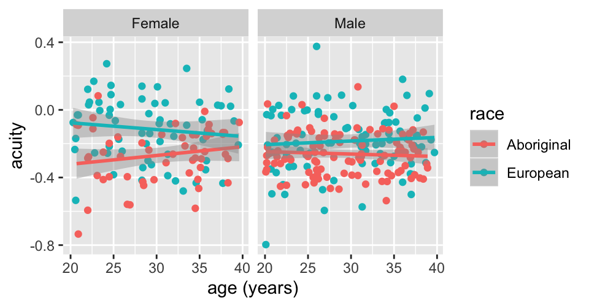
Note que age.num no parece tener una relación con acuity, mientras que la race de europeos tiende a tener valores mayores de acuity. Enseguida otro par de gráficos con el mismo próposito de explorar los datos, ahora sin age.num.
# Diagrama de puntos con un poco de ruido aleatorio
# para evitar el 'overplotting'
ggplot(acuity, aes(x = race, y = acuity)) +
geom_jitter(width = 0.1) + facet_grid(~ gender)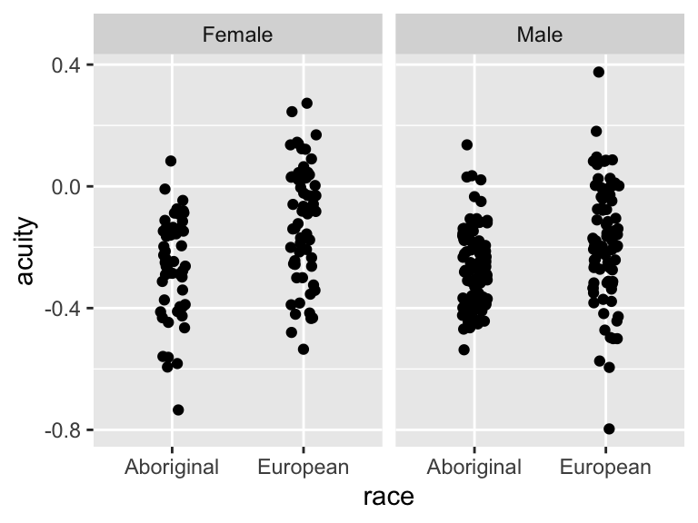
# Boxplot
ggplot(acuity, aes(x = race, y = acuity)) +
geom_boxplot() + facet_grid(~ gender)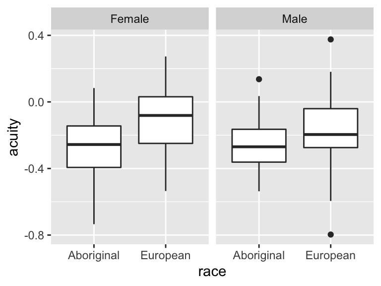
Los boxplot de arriba sugieren que la distribución de acuity es más o menos simétrica. Así, se puede usar la media y la desviación estándar para resumir esta variable. No obstante, lo ideal es realizar el resumén por cada combinación de niveles de gender y race. A continuación se usa el comando group_by (paquete: dplyr) para agrupar el data.frame acuity por gender y race y luego se aplica el comando summarise (paquete: dplyr) para aplicar algunas funciones de resumen.
# Resumen descriptivo usando comandos del paquete dplyr
descrip.acuity <- acuity %>%
group_by(race, gender) %>% # se agrupa por race y gender
summarise(n = n(), m = mean(acuity),
s = sd(acuity),
eem = s/sqrt(n))
descrip.acuity # se imprime el resultado# A tibble: 4 x 6
# Groups: race [2]
race gender n m s eem
<fct> <fct> <int> <dbl> <dbl> <dbl>
1 Aboriginal Female 54 -0.267 0.166 0.0226
2 Aboriginal Male 107 -0.260 0.124 0.0120
3 European Female 63 -0.112 0.190 0.0240
4 European Male 89 -0.185 0.187 0.0198Note que el objeto descrip.acuity contiene el resumen realizado. Este objeto contiene los resultados mostrados en la Tabla 8.1 de Le & Eberly (2016), además, esta tabla permite realizar un perfil de medias (igual a la figura 8.1 de Le & Eberly (2016)) para explorar con mayor detalle la posibilidad de interacción entre gender y race. Este gráfico se puede realizar también con ggplot2:
# Grafico de perfil de medias con barras de error:
ggplot(descrip.acuity, aes(x = gender, y = m, ymin = m-eem, ymax = m+eem,
col = race, shape = race)) +
geom_pointrange(size = 1) + geom_line(aes(group = race)) + ylab('mean acuity')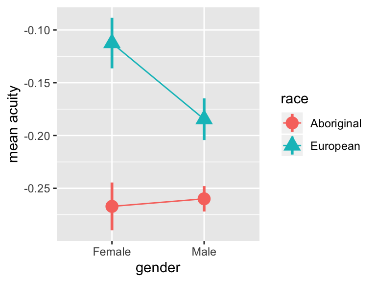
El gráfico sugiere que el efecto de gender sobre acuity es más fuerte en race = European que en race = Aboriginal y esta modificación del efecto es indicativo de interacción entre race y gender. Esto se probará más adelante usando un análisis de varianza.
Los autores categorizan la edad en dos intervalos (20 a 29 y 30 a 39 años). Para hacer esto, usaremos el comado cut dentro del comando mutate (librería dplyr):
range(acuity$age.num) # para ver el min y max de age.num[1] 20.1 39.7acuity2 <- mutate(acuity,
agef = cut(age.num, breaks = c(20,30,40), right = F)
)
str(acuity2) # observe el cambio'data.frame': 313 obs. of 5 variables:
$ acuity : num -0.3172 0.0017 -0.1542 -0.4722 -0.378 ...
$ race : Factor w/ 2 levels "Aboriginal","European": 2 2 2 2 2 2 2 2 2 2 ...
$ gender : Factor w/ 2 levels "Female","Male": 2 2 2 2 2 2 2 2 2 2 ...
$ age.num: num 32.8 23.1 37.6 26.7 36.9 20.8 35 30.9 35.7 33.6 ...
$ agef : Factor w/ 2 levels "[20,30)","[30,40)": 2 1 2 1 2 1 2 2 2 2 ...summary(acuity2$agef)[20,30) [30,40)
160 153 Usando el nuevo objeto acuity2, se puede realizar un boxplot incluyendo también la edad categórica:
# Boxplot para la acuity con cuatro var categoricas
ggplot(acuity2, aes(x = race, y = acuity, fill = agef)) +
geom_boxplot() + facet_grid(~ gender)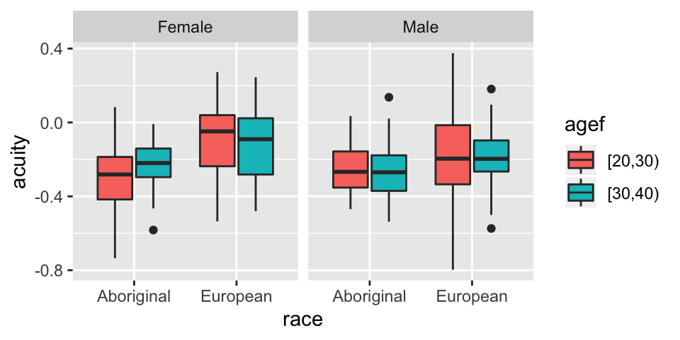
Igual que en el primer gráfico, se observa que la agef no parece introducir explicación adicional en la variación de acuity.
Los boxplot realizados atras sugieren que la distribución de acuity es relativamente simétrica en cada grupo y que posiblemente tenga una distribución normal. Sin embargo otros métodos pueden usarse para realizar una evaluación más rigurosa de la normalidad. Para este propósito, a continuación se realizan gráficos cuantil-cuantil, histogramas y la prueba Shapiro-Wilk.
Los comandos que trae el R de base para realizar un histograma y un gráfico cuantil-cuantil son: hist (paquete: graphics) y qqnorm (paquete: stats) respectivamente. Para ilustración, enseguida se usan estos dos comandos sobre la variable acuity para los 313 sujetos del estudio.
par(mfrow = c(1,2), cex = 0.9) # se abre la ventana grafica en dos espacios (1 fila y 2 columnas)
hist(acuity2$acuity, col = 'lightblue', xlab = 'Visual Acuity')
qqnorm(scale(acuity2$acuity), col = 'blue', ylab = 'Visual Acuity',
xlim = c(-4,4), ylim = c(-4,4))
abline(a = 0, b = 1, lty = 2) # se agrega una linea diagonal de referencia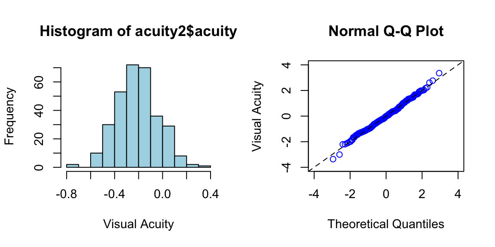
El comando scale estandariza ((\(x - \bar{x})/s\)) los datos antes de realizar el gráfico. Los gráficos indican que acuity sigue una distribución normal. La librería ggplot2, por otro lado, tiene los comandos geom_qq y geom_histogram para el mismo próposito. No obstante, ggplot2 tiene facilidades que permiten realizar los mismos gráficos por grupos. A continuación se realizan los mismos gráficos usando ggplot2:
# Se hace histograma
p1 <- ggplot(acuity2, aes(x = acuity)) +
geom_histogram(bins = 8, col = 'brown', fill = 'lightblue')
# Se hace cuantil-cuantil
p2 <- ggplot(acuity, aes(sample = scale(acuity))) +
geom_qq(col = 'blue') + xlim(-4,4) + ylim(-4,4) +
geom_abline(slope = 1, intercept = 0, lty = 2,
lwd = 0.5, col = 'brown')
# Se grafican juntos:
library(gridExtra)
grid.arrange(p1, p2, ncol = 2)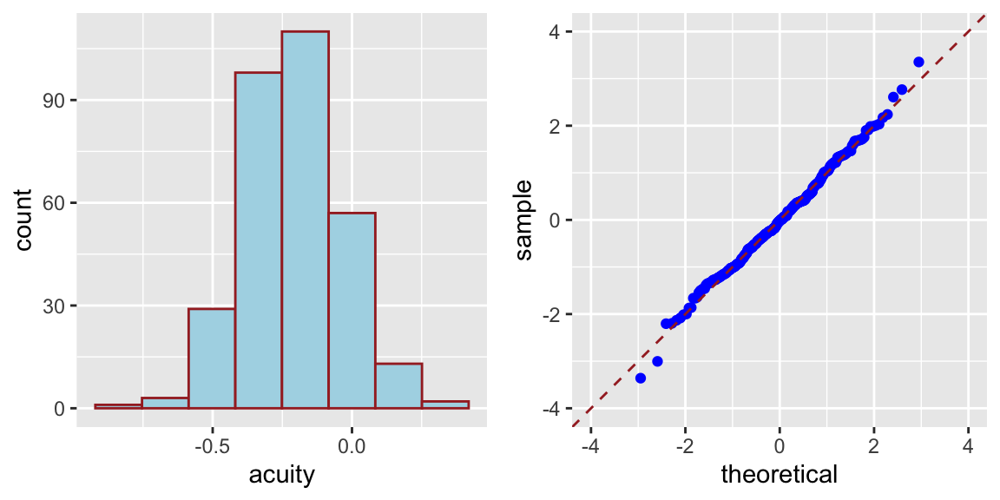
Ahora se realizan los mismos gráficos por grupos (combinaciones de gender, race y agef). Para el gráfico cuantil-cuantil, primero se realiza la estandarización (con scale) por grupo usando group_by y mutate.
# Graficos cuantil - cuantil por grupo
acuity2 %>%
group_by(gender, race, agef) %>%
mutate(acuity.z = scale(acuity)) %>% # se estandariza acuity por gender, race y agef
ggplot(aes(sample = acuity.z)) +
geom_qq(col = 'blue') + xlim(-4,4) + ylim(-4,4) +
geom_abline(slope = 1, intercept = 0, lty = 2,
lwd = 0.5, col = 'brown') +
facet_grid(gender ~ agef + race)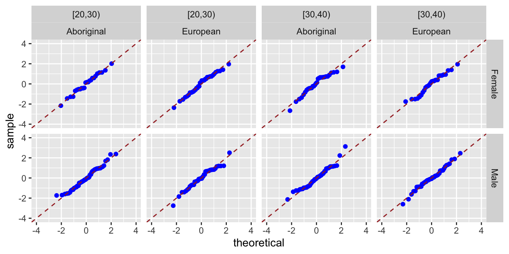
# Histogramas por grupo
ggplot(acuity2, aes(x = acuity)) +
geom_histogram(bins = 8, col = 'brown', fill = 'lightblue') +
facet_grid(gender ~ agef + race) 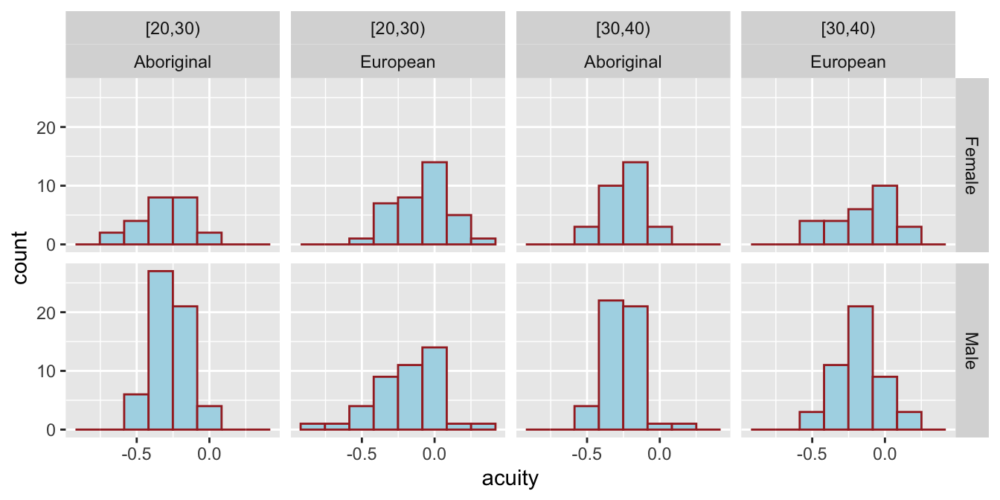
Los gráficos muestran evidencia razonable de normalidad para acuity en cada uno de los grupos de datos.
Una prueba Shapiro-Wilk se realiza con el comando shapiro.test. Si se quisiera aplicar la prueba a toda la columna acuity (sin distinguir por grupo), el código es el siguiente:
res.shapiro <- shapiro.test(acuity2$acuity)
res.shapiro # se imprime
Shapiro-Wilk normality test
data: acuity2$acuity
W = 0.99586, p-value = 0.5824Este resultado produce una lista. Para conocer su contenido podemos usar el comando names.
names(res.shapiro)[1] "statistic" "p.value" "method" "data.name"Por ejemplo, si usted quiere obtener sólo el valor \(p\) (p.value) se escribe el nombre de la lista, signo de moneda ($) y el nombre del elemento, asi:
res.shapiro$p.value[1] 0.5823867Para aplicar el mismo comando a cada grupo podemos usar de nuevo la combinación de comandos group_by y summarise.
# Prueba Shapiro-Wilk sobre acuity por grupo:
acuity2 %>%
group_by(gender, race, agef) %>%
summarise(
n = n(),
valor_P = shapiro.test(acuity)$p.value
)# A tibble: 8 x 5
# Groups: gender, race [4]
gender race agef n valor_P
<fct> <fct> <fct> <int> <dbl>
1 Female Aboriginal [20,30) 24 0.964
2 Female Aboriginal [30,40) 30 0.176
3 Female European [20,30) 36 0.711
4 Female European [30,40) 27 0.429
5 Male Aboriginal [20,30) 58 0.279
6 Male Aboriginal [30,40) 49 0.153
7 Male European [20,30) 42 0.438
8 Male European [30,40) 47 0.847Usando un nivel de significancia \(\alpha = 0.05\), no se rechaza la hipótesis de normalidad en ninguno de los grupos.
Sólo para ilustración, enseguida se realiza una prueba \(T\) para comparar la media del acuity entre los dos niveles de race mediante el comando t.test en mujeres. Este comando recibe una formula (y ~ x) donde se indica cual es la respuesta (y) y cual es la variable explicativa (x), un argumento data donde debe indicarse el data.frame con los datos y, de forma opcional, el argumento subset donde se específica un filtro para las filas de la tabla usando una expresión lógica.
# Prueba T para Female (suponiendo varianzas diferentes)
t.test(acuity ~ race, data = acuity, subset = gender == 'Female',
alternative = 'two.sided', paired = F, var.equal = F)
Welch Two Sample t-test
data: acuity by race
t = -4.6948, df = 114.95, p-value = 7.433e-06
alternative hypothesis: true difference in means is not equal to 0
95 percent confidence interval:
-0.22000909 -0.08944593
sample estimates:
mean in group Aboriginal mean in group European
-0.2671370 -0.1124095 El comando wilcox.test realiza la prueba no parámetrica \(U\) de Mann-Whitney (o prueba de sumas de rangos de Wilcoxon) equivalente. Los argumentos de este comando son similares a los de t.test.
# Prueba no parametrica de Wilcoxon (o Mann-Whitney) para Female:
wilcox.test(acuity ~ race, data = acuity, subset = gender == 'Female',
alternative = 'two.sided', paired = F, correct = F)
Wilcoxon rank sum test
data: acuity by race
W = 930.5, p-value = 2.524e-05
alternative hypothesis: true location shift is not equal to 0En ambos casos, el valor \(p\) (p-value) indica evidencia fuerte en contra de la hipótesis nula de igualdad. Realice usted la prueba \(T\) y de Wilcoxon para los hombres. Use ?wilcox.test y ?t.test para ver la ayuda y revisar el detalle de los argumentos de cada comanado.
Adicionalmente, si quiere comparar dos (o más) varianzas, se encuentran los comandos var.test (librería: stats), bartlett.test (librería: stats) y leveneTest (librería: car). Sus argumentos son similares a los de t.test.
Para ejecutar un modelo lineal donde acuity se evalue en función de race y gender (o incluso age.num o agef) se usa el comando lm. Este comando sirve para modelos con una o más variables explicativas de diferente tipo. Otros comandos como summary, anova, predict, residuals, confint, plot, etc. están disponibles para extrear diferentes cálculos y pruebas del objeto generado por lm. Todos estos comandos son del paquete stats. Adicionalmente, el paquetes emmeans (Lenth, 2019) tiene comandos para realizar cálculo de medias y contrastes personalizados sobre el objeto producido por lm. El paquete car (Fox & Weisberg, 2011) también es un buen acompañante para realizar cálculos sobre el objeto lm.
lm y explorando el objetoCon el comando lm podemos ajustar el siguiente modelo:
\[ \mathtt{acuity}_i = \beta_0 + \beta_1\mathtt{gender}^{m}_i + \beta_2\mathtt{race}^{e}_i + \beta_3(\mathtt{gender}^{f} \times \mathtt{race}^{e})_i + \varepsilon_i \]
donde \(\mathtt{gender}^{m}\) es \(1\) si gender es male y \(0\) en otro caso, y \(\mathtt{race}^{e}\) es \(1\) si race es European y \(0\) en otro caso. Note que el nivel de referencia queda para el primer nivel de cada factor incluido en el modelo. El término \(\mathtt{gender}^{f} \times \mathtt{race}^{e}\) indica la interacción entre gender y race. En lm, los errores o residuales (\(\varepsilon_i\)) se suponen normales con media \(0\) y varianza \(\sigma^2\).
Similar a comandos como t.test, wilcox.test o var.test (ver atras), el comando lm recibe los argumentos: formula, data y subset (opcional).
# Se ejecuta un modelo lineal usando lm:
m <- lm(acuity ~ gender + race + gender:race, data = acuity2) # forma larga
m <- lm(acuity ~ gender*race, data = acuity2) # forma corta
class(m) # examine la clase del objeto[1] "lm"m # imprima el objeto
Call:
lm(formula = acuity ~ gender * race, data = acuity2)
Coefficients:
(Intercept) genderMale raceEuropean
-0.267137 0.007179 0.154728
genderMale:raceEuropean
-0.079337 La impresión nos ofrece la estimación de los coeficientes del modelo (\(\hat{\beta}_0 = -0.267, \hat{\beta}_1 = 0.007, \hat{\beta}_2 = 0.155, \hat{\beta}_3 = -0.079\)).
El objeto m es una lista de clase lm. Para ver el contenido de esta lista usamos names:
names(m) [1] "coefficients" "residuals" "effects" "rank"
[5] "fitted.values" "assign" "qr" "df.residual"
[9] "contrasts" "xlevels" "call" "terms"
[13] "model" Para extraer cualquier de estos objetos usamos el nombre de la lista, el signo de moneda ($) y el nombre del objeto. Por ejemplo, si usted quiere extraer los coeficientes:
m$coefficients # tambien sirve m$coef o coef(m) (Intercept) genderMale raceEuropean
-0.267137037 0.007179093 0.154727513
genderMale:raceEuropean
-0.079336985 El comando plot sobre el objeto de clase lm imprime seis gráficos de diagnóstico. De estos seis se muestran tres a continuación:
par(mfrow = c(1,3), cex = 0.9) # se divide la ventana en 3 (1 fila y 3 col)
plot(m, which = 1) # residuales vs. ajustados
plot(m, which = 2) # qqnorm de resiudales estandarizados
plot(m, which = 4) # distancia de cook (valores influenciales)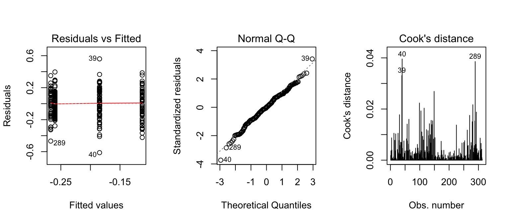
El comando anova imprime un análisis de varianza con pruebas (o sumas de cuadrado) secuenciales (tipo I en la jerga del programa SAS):
# Anova tipo 1 o secuencial
anova(m)Analysis of Variance Table
Response: acuity
Df Sum Sq Mean Sq F value Pr(>F)
gender 1 0.1286 0.12864 4.7259 0.03047 *
race 1 0.8578 0.85777 31.5127 4.412e-08 ***
gender:race 1 0.1145 0.11450 4.2064 0.04111 *
Residuals 309 8.4110 0.02722
---
Signif. codes: 0 '***' 0.001 '**' 0.01 '*' 0.05 '.' 0.1 ' ' 1Si se quiere obtener las anovas tipo 2 y 3 use el comando Anova (paquete: car)
library(car)
Anova(m, type = 2) # Anova tipo 2Anova Table (Type II tests)
Response: acuity
Sum Sq Df F value Pr(>F)
gender 0.0794 1 2.9177 0.08862 .
race 0.8578 1 31.5127 4.412e-08 ***
gender:race 0.1145 1 4.2064 0.04111 *
Residuals 8.4110 309
---
Signif. codes: 0 '***' 0.001 '**' 0.01 '*' 0.05 '.' 0.1 ' ' 1Anova(m, type = 3) # Anova tipo 3Anova Table (Type III tests)
Response: acuity
Sum Sq Df F value Pr(>F)
(Intercept) 3.8536 1 141.5709 < 2.2e-16 ***
gender 0.0018 1 0.0680 0.79452
race 0.6961 1 25.5738 7.312e-07 ***
gender:race 0.1145 1 4.2064 0.04111 *
Residuals 8.4110 309
---
Signif. codes: 0 '***' 0.001 '**' 0.01 '*' 0.05 '.' 0.1 ' ' 1Para imprimir una tabla con coeficientes, errores estándar y pruebas sobre los coeficientes del modelo use el comando summary
# resumen de los ppales aspectos del modelo
summary(m)
Call:
lm(formula = acuity ~ gender * race, data = acuity2)
Residuals:
Min 1Q Median 3Q Max
-0.61233 -0.11024 0.00136 0.12014 0.55997
Coefficients:
Estimate Std. Error t value Pr(>|t|)
(Intercept) -0.267137 0.022452 -11.898 < 2e-16 ***
genderMale 0.007179 0.027540 0.261 0.7945
raceEuropean 0.154728 0.030596 5.057 7.31e-07 ***
genderMale:raceEuropean -0.079337 0.038683 -2.051 0.0411 *
---
Signif. codes: 0 '***' 0.001 '**' 0.01 '*' 0.05 '.' 0.1 ' ' 1
Residual standard error: 0.165 on 309 degrees of freedom
Multiple R-squared: 0.1157, Adjusted R-squared: 0.1072
F-statistic: 13.48 on 3 and 309 DF, p-value: 2.733e-08La parte final de la salida del summary muestra estadísticos útiles como el coeficiente de determinación (\(R^2\)) y el coef. de determinación ajustado.
El comando confint imprime adicionalmente intervalos de confianza para los coeficientes del modelo:
# Se imprimen IC95% para los coeficientes
confint(m) 2.5 % 97.5 %
(Intercept) -0.31131437 -0.222959700
genderMale -0.04701109 0.061369271
raceEuropean 0.09452395 0.214931075
genderMale:raceEuropean -0.15545234 -0.003221635Usted podría juntar en un mismo objeto la tabla de coeficientes generada por summary y la tabla de IC95% generada por confint usando el comando cbind (unir o pegar por columnas):
# Se juntan tabla de coeficientes con sus IC95%
cbind(
summary(m)$coef,
confint(m)
) %>% round(4) Estimate Std. Error t value Pr(>|t|) 2.5 %
(Intercept) -0.2671 0.0225 -11.8984 0.0000 -0.3113
genderMale 0.0072 0.0275 0.2607 0.7945 -0.0470
raceEuropean 0.1547 0.0306 5.0571 0.0000 0.0945
genderMale:raceEuropean -0.0793 0.0387 -2.0510 0.0411 -0.1555
97.5 %
(Intercept) -0.2230
genderMale 0.0614
raceEuropean 0.2149
genderMale:raceEuropean -0.0032No obstante, el comando ci.lin de la librería Epi hace lo mismo por defecto:
# Impresion de tabla de coef e IC95% juntos:
library(Epi)
ci.lin( m ) %>% round(4) Estimate StdErr z P 2.5% 97.5%
(Intercept) -0.2671 0.0225 -11.8984 0.0000 -0.3111 -0.2231
genderMale 0.0072 0.0275 0.2607 0.7943 -0.0468 0.0612
raceEuropean 0.1547 0.0306 5.0571 0.0000 0.0948 0.2147
genderMale:raceEuropean -0.0793 0.0387 -2.0510 0.0403 -0.1552 -0.0035Finalmente, se pueden gráficar los coeficientes junto con IC95% usando el comando ggcoef (librería: GGally):
library(GGally)
ggcoef(m) # se crea el grafico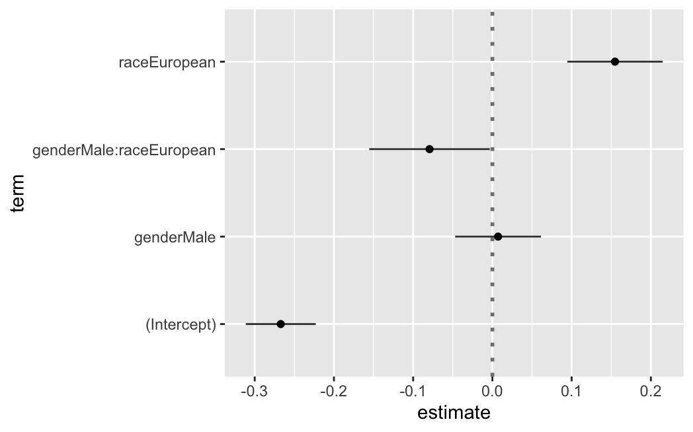
Si se quiere cambiar un nivel de referencia lo puede hacer con factor o con el comando relevel. Puede usar mutate para aplicar cualquiera de estos comandos a la columna respectiva del data.frame:
# Se crea otro data.frame donde gender tiene como nivel
# de referencia a Male:
acuity3 <- mutate(acuity2,
gender = relevel(gender, ref = 'Male')
)
# Se ejecuta el modelo de nuevo:
m <- lm(acuity ~ gender*race, data = acuity3)
round(m$coef, 4) # se imprimen los coeficientes (Intercept) genderFemale
-0.2600 -0.0072
raceEuropean genderFemale:raceEuropean
0.0754 0.0793 Suponga que usted quiere evaluar si la edad tiene un efecto sobre acuity (ejemplo 8.2 de Le & Eberly (2016)). Se puede ejecutar un nuevo modelo que incluya la edad y utilizar el comando anova para comparar los dos modelos. Esto devuelve una prueba \(F\) que compara el modelo completo (que incluye la edad) con uno reducido (que no incluya la edad). La comparación se realiza en términos de la reducción en la suma de cuadrados del error que ocurre del modelo reducido al modelo completo.
# Nuevo modelo con la edad:
m.agef <- lm(acuity ~ gender*agef*race, data = acuity3)
# Comparacion de modelos:
anova(m, m.agef)Analysis of Variance Table
Model 1: acuity ~ gender * race
Model 2: acuity ~ gender * agef * race
Res.Df RSS Df Sum of Sq F Pr(>F)
1 309 8.4110
2 305 8.2987 4 0.11225 1.0313 0.3912Desde el objeto lm se pueden solicitar estimación de medias y efectos (diferencias de medias) con una variedad de opciones. Para esto es últil la librería emmeans. A continuación se solicitan las medias de acuity por race para cada gender, y además, se calculan contrastes (diferencias) entre las medias de acuity en cada gender.
# Medias de raza por genero y diferencias entre
# razas dentro de genero
emmeans(m, specs = ~ gender | race, contr = 'pairwise')$emmeans
race = Aboriginal:
gender emmean SE df lower.CL upper.CL
Male -0.260 0.0159 309 -0.291 -0.2286
Female -0.267 0.0225 309 -0.311 -0.2230
race = European:
gender emmean SE df lower.CL upper.CL
Male -0.185 0.0175 309 -0.219 -0.1502
Female -0.112 0.0208 309 -0.153 -0.0715
Confidence level used: 0.95
$contrasts
race = Aboriginal:
contrast estimate SE df t.ratio p.value
Male - Female 0.00718 0.0275 309 0.261 0.7945
race = European:
contrast estimate SE df t.ratio p.value
Male - Female -0.07216 0.0272 309 -2.656 0.0083 La salida de emmeans se divide en dos partes. Al inicio muestra las medias ($emmeans) de gender en cada nivel de race. Al final muestra los contrastes ($contrasts) o diferentes entre los niveles de gender para cada race. En Aboriginal note que la diferencia resultó positiva y no significativa (valor \(p = 0.7945\)), mientras que European resultó negativa y significativa (valor \(p = 0.0083\)). Por esta razón, la interacción tuvo significancia en el modelo.
El comando ci.lin (paquete: Epi) también permite solicitar contrastes entre niveles de un factor en un modelo lm.
El objeto ovarian (paquete: survival) en R contiene los datos de un ensayo aleatorizado de cohorte donde se comparan dos tratamientos contra el cáncer de ovario. Usaremos estos datos para ilustrar algunos aspectos del análisis de supervivencia en R tales como estimación Kaplan-Meier, curvas de supervivencia y regresión de Cox. Un script inicial para estos datos se puede descargar aquí.
En este enlace podrá encontrar mayor detalle sobre análisis de supervivencia y regresión de Cox en R. También dos libros recomandos de análisis de supervivencia en R son el de Tableman & Kim (2003) y el de Broström (2012).
Los datos ya se encuentran en R. Sólo debe activarse el paquete survival y luego los datos con el comando data:
library(survival) # se activa survival
data("ovarian") # se activa el data.frame ovarian
# Se revisa la estructura
str(ovarian)'data.frame': 26 obs. of 6 variables:
$ futime : num 59 115 156 421 431 448 464 475 477 563 ...
$ fustat : num 1 1 1 0 1 0 1 1 0 1 ...
$ age : num 72.3 74.5 66.5 53.4 50.3 ...
$ resid.ds: num 2 2 2 2 2 1 2 2 2 1 ...
$ rx : num 1 1 1 2 1 1 2 2 1 2 ...
$ ecog.ps : num 1 1 2 1 1 2 2 2 1 2 ...# Resumen del data.frame
summary(ovarian) futime fustat age resid.ds
Min. : 59.0 Min. :0.0000 Min. :38.89 Min. :1.000
1st Qu.: 368.0 1st Qu.:0.0000 1st Qu.:50.17 1st Qu.:1.000
Median : 476.0 Median :0.0000 Median :56.85 Median :2.000
Mean : 599.5 Mean :0.4615 Mean :56.17 Mean :1.577
3rd Qu.: 794.8 3rd Qu.:1.0000 3rd Qu.:62.38 3rd Qu.:2.000
Max. :1227.0 Max. :1.0000 Max. :74.50 Max. :2.000
rx ecog.ps
Min. :1.0 Min. :1.000
1st Qu.:1.0 1st Qu.:1.000
Median :1.5 Median :1.000
Mean :1.5 Mean :1.462
3rd Qu.:2.0 3rd Qu.:2.000
Max. :2.0 Max. :2.000 La variable funtime indica el tiempo de falla (muerte) o censura, mientras que funstat indica si ocurrió censura (0) o no (1). Note que el \(100 - 46.2 = 53.8\)% de la muestra tuvo censura. Las otras variables son la edad del sujeto (age), si tenía una enfermedad resiudal (resid.ds), el grupo tratamiento (rx) y el estatus de ECOG (ecog.ps, donde 1 es mejor). Ver la ayuda de ovarian para más detalles.
factorNote en el resumen anterior, que las variables resid.ds, rx y ecog.ps son categóricas. Dado que los análisis que se realizarán enseguida permiten trabajar con estas variables como factores, a continuación se convierten en factores usando factor dentro de mutate:
# Se convierten en factor algunas variables creandose
# otro data.frame:
ovarianf <- mutate(ovarian,
resid.ds = factor(resid.ds, labels = c('no', 'yes')),
rx = factor(rx, labels = c('A', 'B')),
ecog.ps = factor(ecog.ps, levels = c(1,2), labels = c('good', 'bad')),
agef = factor(ifelse(age > 50, 'old', 'young'))
)
str(ovarianf)'data.frame': 26 obs. of 7 variables:
$ futime : num 59 115 156 421 431 448 464 475 477 563 ...
$ fustat : num 1 1 1 0 1 0 1 1 0 1 ...
$ age : num 72.3 74.5 66.5 53.4 50.3 ...
$ resid.ds: Factor w/ 2 levels "no","yes": 2 2 2 2 2 1 2 2 2 1 ...
$ rx : Factor w/ 2 levels "A","B": 1 1 1 2 1 1 2 2 1 2 ...
$ ecog.ps : Factor w/ 2 levels "good","bad": 1 1 2 1 1 2 2 2 1 2 ...
$ agef : Factor w/ 2 levels "old","young": 1 1 1 1 1 1 1 1 1 1 ...El comando survfit (paquete: survival) permite estimar la función de supervivencia usando Kaplan-Meier. Igual que lm, el comando survfit recibe tres argumentos principales: formula, data y opcionalmente un subset.
La formula tiene la forma: Surv(time, event) ~ x, donde el comando Surv crea un objeto de supervivencia para la respuesta a partir de argumento para la tiempo (time) de falla y otro para el tipo de evento ocurrido (event, censura o no). Vease la ayuda de Surv para más opciones. El término x en la fórmula indica la variable explicativa.
Enseguida se ejecuta survfit sobre ovarianf:
# Analisis univariado (sin variable explicativa)
m <- survfit( Surv(time = futime, event = fustat, type = 'right') ~ 1, data = ovarianf)
# Lo mismo pero usando opciones por defecto
m <- survfit( Surv(futime, fustat) ~ 1, data = ovarianf ) El objeto m es una lista de clase survfit. Para explorar su contenido usamos names:
names(m) # elementos de la lista [1] "n" "time" "n.risk" "n.event" "n.censor"
[6] "surv" "std.err" "cumhaz" "std.chaz" "start.time"
[11] "type" "logse" "conf.int" "conf.type" "lower"
[16] "upper" "call" Para obtener una tabla con la estimación de la función de supervivencia podemos usar summary, similar a las mostradas en la sección 5.4 de Woodward (2014):
# Tabla con estimacion de supervivencia Kaplan-Meier
summary(m)Call: survfit(formula = Surv(futime, fustat) ~ 1, data = ovarianf)
time n.risk n.event survival std.err lower 95% CI upper 95% CI
59 26 1 0.962 0.0377 0.890 1.000
115 25 1 0.923 0.0523 0.826 1.000
156 24 1 0.885 0.0627 0.770 1.000
268 23 1 0.846 0.0708 0.718 0.997
329 22 1 0.808 0.0773 0.670 0.974
353 21 1 0.769 0.0826 0.623 0.949
365 20 1 0.731 0.0870 0.579 0.923
431 17 1 0.688 0.0919 0.529 0.894
464 15 1 0.642 0.0965 0.478 0.862
475 14 1 0.596 0.0999 0.429 0.828
563 12 1 0.546 0.1032 0.377 0.791
638 11 1 0.497 0.1051 0.328 0.752Para graficar la curva de supervivencia Kaplan-Meier usamos plot o el comando ggsurvplot (paquete: survminer):
# Grafico con estimacion Kaplan-Meier
plot(m, xlab = 'Tiempo', ylab = 'Prob of survival', col = 'blue',
mark.time = T) 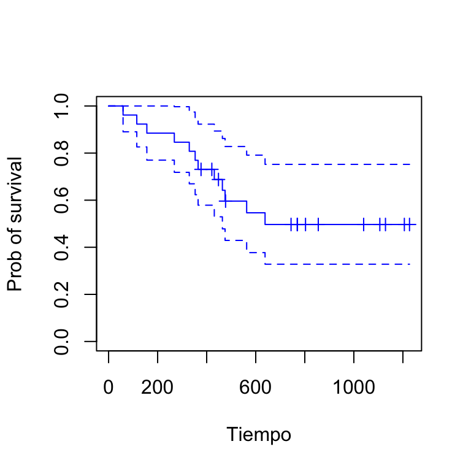
# Grafico con estimacion Kaplan-Meier usando ggsurvplot:
library(survminer)
ggsurvplot(fit = m, censor = T)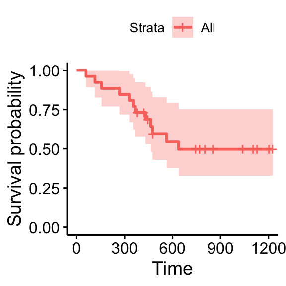
Una cantidad de interés en el análisis de supervivencia es la probabilidad de sobrevir a cierto tiempo \(x\). Esta estimación puede realizarse usando el comando summary con el argumento times:
# Prob. de sobrevivencia en time = 300
summary(m, time = 300)Call: survfit(formula = Surv(futime, fustat) ~ 1, data = ovarianf)
time n.risk n.event survival std.err lower 95% CI upper 95% CI
300 22 4 0.846 0.0708 0.718 0.997Note que si sólo se imprime el objeto m (de clase survfit), aparece la estimación del tiempo mediano de supervivencia:
m # Impresion del objeto. Aparece estimacion para el tiempo medianoCall: survfit(formula = Surv(futime, fustat) ~ 1, data = ovarianf)
n events median 0.95LCL 0.95UCL
26 12 638 464 NA El tiempo mediano fue 638. Compare este resultado con el gráfico anterior. Coincide.
Suponga ahora que se desea comparar los tiempos de supervivencia entre los tratamientos A y B (variable rx). A continuación se ajusta un nuevo modelo con survfit:
m1 <- survfit( Surv(futime, fustat) ~ rx, data = ovarianf )
m1Call: survfit(formula = Surv(futime, fustat) ~ rx, data = ovarianf)
n events median 0.95LCL 0.95UCL
rx=A 13 7 638 268 NA
rx=B 13 5 NA 475 NALa prueba long-rank (Woodward, 2014, sección 5.5.2) para comparar dos curvas de supervivencia se puede realizar con el comando survdiff (paquete: survival):
# Prueba Long-Rank (no parametrica) para comparar dos curvas
# de supervivencia:
survdiff(Surv(futime, fustat) ~ rx, data = ovarianf, rho = 0 )Call:
survdiff(formula = Surv(futime, fustat) ~ rx, data = ovarianf,
rho = 0)
N Observed Expected (O-E)^2/E (O-E)^2/V
rx=A 13 7 5.23 0.596 1.06
rx=B 13 5 6.77 0.461 1.06
Chisq= 1.1 on 1 degrees of freedom, p= 0.3 Además, un gráfico para los dos grupos, con ggsurvplot, es:
# Grafico usando ggsurvplot:
ggsurvplot(fit = m1, censor = T, pval = T, risk.table = T)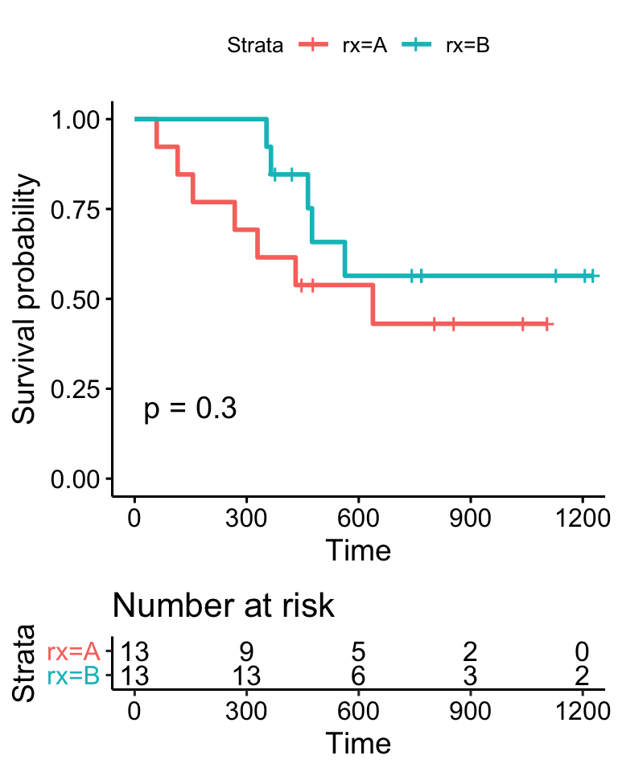
El valor \(p = 0.3\) que se indica en el gráfico es el valor \(p\) de la prueba long-rank mostrada arriba. Note que la supervivencia del grupo B parece ser mayor que la del grupo A, no obstante, con \(\alpha = 0.05\), se retiene la hipótesis nula de igualdad.
Si se busca evaluar simultaneamente más de una variable explicativa, la regresión de Cox es una opción. Este es un modelo semi-paramétrico que supone hazards proporcionales. Siguiendo la notación de Woodward (2014), el modelo de regresión de Cox se puede escribir como:
\[ \log{\phi} = \beta_1 x_1 + \beta_2 x_2 + \cdots + \beta_k x_k \ , \quad \text{ donde } \quad \phi = \dfrac{h_j(t)}{h_0(t)} \] y \(h_j(t)/h_0(t)\) es la razón de hazards que compara el hazard de fallar (muerte) cuando se esta expuesto al \(j-\)ésimo nivel de las variables \(x_1, x_2, \ldots, x_k\) contra el hazard de fallar cuando se esta expuesto al primer nivel o de referencia de las variables \(x_1, x_2, \ldots, x_k\).
El modelo se ajusta en R con el comando coxph (paquete: survival). Sus argumentos principales son los mismos que aquellos en survfit.
Enseguida se ejecuta un modelo de Cox incluyendo rx, resid.ds y agef como variables explicativas:
# Ejecucion de modelo de Cox:
m.cox <- coxph(Surv(futime, fustat) ~ rx + resid.ds + agef + ecog.ps,
data = ovarianf)Como es usual, el comando summary imprime un resumen de los coeficientes del modelo incluyendo valores \(p\) e intervalos de confianza para los coeficientes:
# Resumen del modelo de Cox:
summary(m.cox)Call:
coxph(formula = Surv(futime, fustat) ~ rx + resid.ds + agef +
ecog.ps, data = ovarianf)
n= 26, number of events= 12
coef exp(coef) se(coef) z Pr(>|z|)
rxB -1.3814 0.2512 0.6448 -2.142 0.0322 *
resid.dsyes 1.4470 4.2503 0.7292 1.984 0.0472 *
agefyoung -2.2013 0.1107 1.1069 -1.989 0.0467 *
ecog.psbad 0.5859 1.7966 0.6329 0.926 0.3546
---
Signif. codes: 0 '***' 0.001 '**' 0.01 '*' 0.05 '.' 0.1 ' ' 1
exp(coef) exp(-coef) lower .95 upper .95
rxB 0.2512 3.9803 0.07100 0.8891
resid.dsyes 4.2503 0.2353 1.01801 17.7453
agefyoung 0.1107 9.0368 0.01264 0.9686
ecog.psbad 1.7966 0.5566 0.51966 6.2113
Concordance= 0.782 (se = 0.065 )
Likelihood ratio test= 12.19 on 4 df, p=0.02
Wald test = 9.02 on 4 df, p=0.06
Score (logrank) test = 11.97 on 4 df, p=0.02Este mismo resumen se puede explorar de forma gráfica usando un diagrama de Forest (como los usados en metanalisis). Este diagrama lo hace el comando ggforest (paquete: survminer):
# Diagrama de Forest para el modelo de Cox
ggforest(m.cox, data = ovarianf)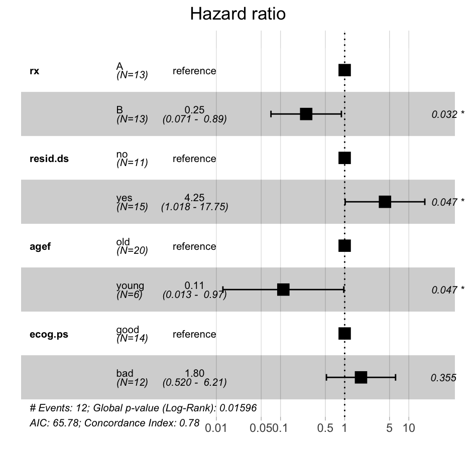
En la parte inferior de la impresión del summary(m.cox) se imprime una prueba razón de verosimilitud sobre la significancia general del modelo. Por otro lado, la razón de hazard (\(h_j(t)/h_0(t)\), en su escala original) se indica en la columna exp(coef) y un intervalo de confianza del 95% se indica en las columnas lower .95 upper .95 respectivamente. Una prueba \(Z\) (de Wald) sobre la significancia de cada coeficiente se indica en las columnas z Pr(>|z|).
Los resultados indican que, luego de ajustar por las otras variables en el modelo, la variable rx tiende a reducir el riesgo (hazard) de morir con el tratamiento B (sobre el A) de forma significativa (\(\hat{\phi} = 0.25\), valor \(p = 0.032\)); los individuos young (menores a 50 años) tienen un hazard significativamente más bajo (\(\hat{\phi} = 0.11\), valor \(p = 0.047\)) que aquellos mayores, y tener resid.ds incrementa el hazard de morir (\(\hat{\phi} = 4.25\), valor \(p = 0.047\)). Finalmente, la variable ecog.ps resultó sin significancia estadística.
El comando cox.zph (paquete: survival) evalua la asunción de hazards proporcionales de la regresión de Cox.
# Evaluacion de la asuncion de hazards proporcionales
cox.zph(m.cox) rho chisq p
rxB 0.229 0.511 0.475
resid.dsyes -0.324 0.871 0.351
agefyoung -0.231 0.708 0.400
ecog.psbad 0.337 1.083 0.298
GLOBAL NA 4.411 0.353La impresión de cox.zph muestra, para cada variable explicativa, una prueba sobre la correlación entre el tiempo de supervivencia transformado y los residuales de Schoenfeld. La columna rho indica la correlación, y las columnas chisq y p indican una prueba de hipótesis sobre la correlación. La ausencia de correlación (no rechazo de la hipótesis nula) indica una validación del supuesto de hazards proporcionales. Para este caso, un \(\alpha = 0.05\) se retiene la hipótesis nula y se valida el supuesto de hazard proporcionales.
El archivo truchas.zip continen los datos de la ocurrencia de una infección bacteriana (bacteria) en 193 truchas pescadas de tres estaciones (est) diferentes y en dos épocas (epoca: 0 = Seca y 1 = lluviosa) del año. Además, a cada individuo colectado, se le registró la talla (talla en mm). Este conjunto de datos será utilizado para ilustrar algunas técnicas de análisis de datos categóricos (tablas de contingencia, pruebas chi-cuadrado, etc.) incluyendo regresión logística. Se recomienda el libro de Bilder & Loughin (2014) para una presentación detallada de análisis de datos categóricos con R.
Los datos se encuentran en un archivo .RData. El comando load permite cargar al espacio de trabajo un archivo de este tipo:
# Lectura de datos
load("truchas.RData") # Se cargan los datos al espacio de trabajo
str(truchas) # estructura del objeto'data.frame': 193 obs. of 4 variables:
$ bacteria: int 0 0 0 0 1 0 0 0 0 0 ...
$ talla : num 39.5 50.7 20.8 19.7 21.3 35.2 20.9 30.3 36.6 29.5 ...
$ est : Factor w/ 3 levels "a","b","c": 1 1 1 1 1 1 1 1 1 1 ...
$ epoca : Factor w/ 2 levels "0","1": 1 1 1 1 1 1 1 1 1 1 ...summary(truchas) # resumen del objeto bacteria talla est epoca
Min. :0.0000 Min. : 5.40 a:63 0:99
1st Qu.:0.0000 1st Qu.:24.60 b:66 1:94
Median :0.0000 Median :31.90 c:64
Mean :0.2591 Mean :31.35
3rd Qu.:1.0000 3rd Qu.:36.90
Max. :1.0000 Max. :54.70 Enseguida se cambian las etiquetas de los niveles de epoca y se propone una categorización para la talla:
# Se cambian las etiquetas de epoca y se categoriza la talla en
# en tres intervalos:
truchasf <- mutate(truchas,
epoca = factor(epoca, labels = c('seca', 'lluviosa')),
tallaf = cut(talla, breaks = c(5, 28, 35, 55))
)
# Resumen del data.frame:
summary(truchasf) bacteria talla est epoca tallaf
Min. :0.0000 Min. : 5.40 a:63 seca :99 (5,28] :71
1st Qu.:0.0000 1st Qu.:24.60 b:66 lluviosa:94 (28,35]:52
Median :0.0000 Median :31.90 c:64 (35,55]:70
Mean :0.2591 Mean :31.35
3rd Qu.:1.0000 3rd Qu.:36.90
Max. :1.0000 Max. :54.70 # Tabla de frecuencias plana
ftable(tallaf ~ est + epoca, data = truchasf) tallaf (5,28] (28,35] (35,55]
est epoca
a seca 11 12 14
lluviosa 8 7 11
b seca 11 4 10
lluviosa 18 10 13
c seca 10 14 13
lluviosa 13 5 9Se encontró una prevalencia general de la infección de 25.9%, además las variables est, epoca y tallaf estan distribuidas más o menos uniformemente entre sus respectivas categorías.
Con estos datos se busca analizar la respuesta bacteria en función de la talla (o tallaf), la est y la epoca. A continuación se realiza un gráfico de dispersión entre bacteria y talla para cada nivel de est y epoca usando ggplot2:
# diagrama de dispersion
ggplot(truchasf, aes(x = talla, y = bacteria, col = epoca,
shape = epoca)) +
geom_jitter(height = 0.05, size = 2) + facet_grid(~ est)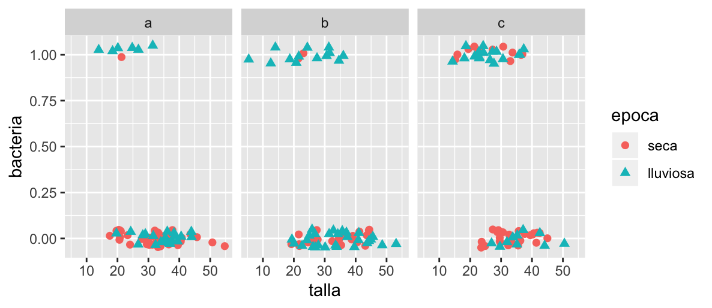
Este gráfico no es muy claro, pero se nota que hay más puntos verdes (época lluviosa) para truchas infectadas, además hay más puntos infectados en tallas pequeñas y más puntos infectados en la estación c.
Un gráfico de mosaico desde la librería vcd permite dar otra mirada a este conjunto de datos.
# Tabla de conteos (array) de cuatro dimensiones:
tab <- xtabs(~ bacteria + est + epoca + tallaf, data = truchasf)
library(vcd) # Para grafico de mosico
mosaic( tab, condvars = c(3,4), main = "Gráfico de Mosaico")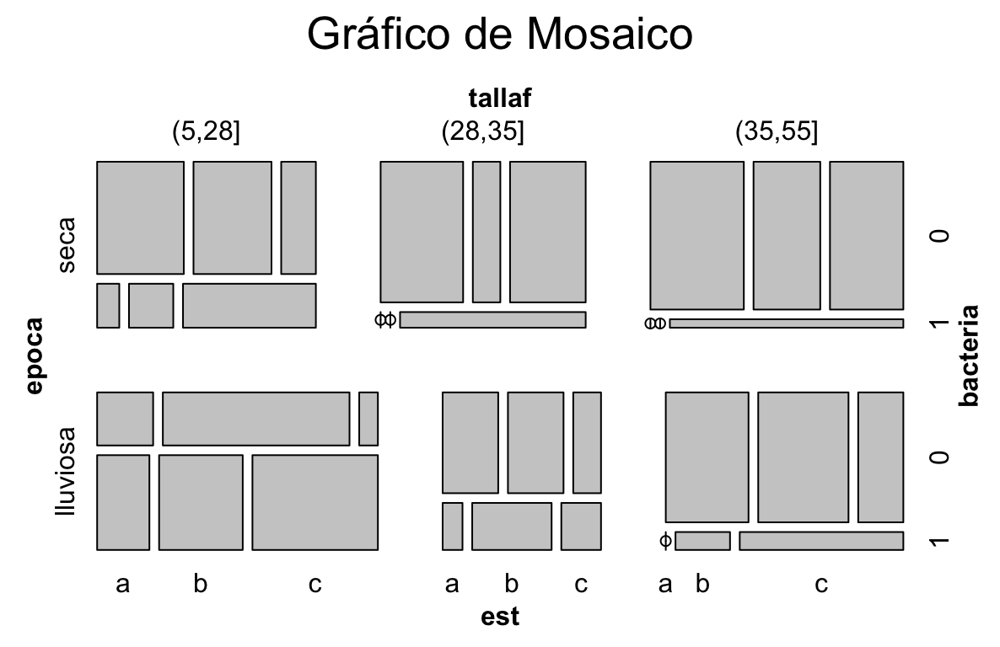
Otra versión del gráfico de mosaico es la siguiente:
mosaic( tab, condvars = c(3,4), shade = T, highlighting = "bacteria",
highlighting_fill = c("grey70","salmon"), main = "Gráfico de Mosaico")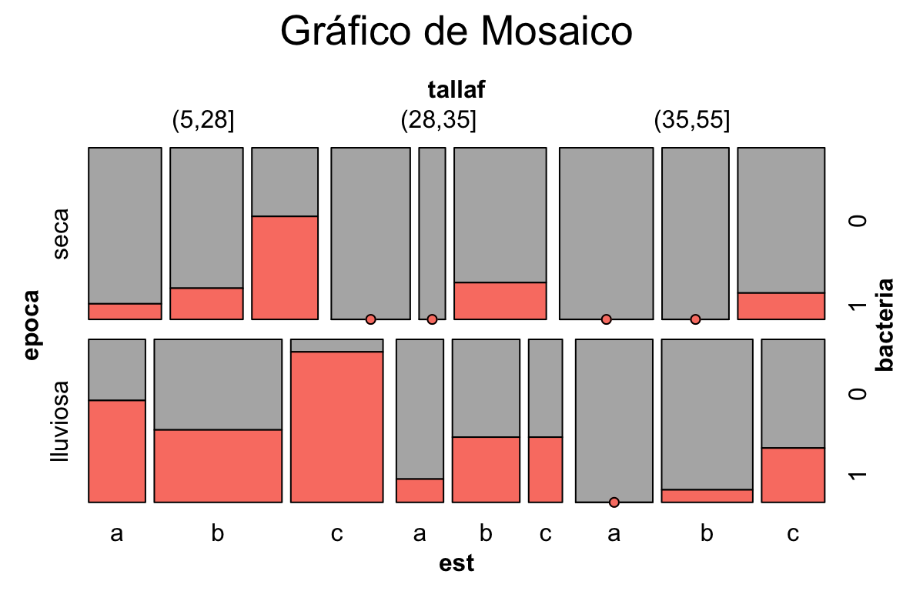
Note que la infección aumenta hacia la estación c, es más frecuente en tallas pequeñas y en época lluviosa.
Para una respuesta dicotómica como es el caso de este ejemplo, el resumen numérico ideal es el conteo del evento de interés o número de éxitos (individuos infectados) y, más aún, la proporción (o riesgo) del evento de interés. Enseguida se usa group_by y summarise para calcular el riesgo de infección como la proporción de truchas infectadas del total colectado en cada combinación de niveles de epoca, est y tallaf:
# Se realiza el calculo del riesgo de infeccion por epoca, estacion y tallaf:
truchasg <- truchasf %>%
group_by(tallaf, est, epoca) %>%
summarise(n = n(),
n_bac = sum(bacteria == 1),
p_bac = mean(bacteria == 1)) %>%
ungroup()
truchasg # se imprime# A tibble: 18 x 6
tallaf est epoca n n_bac p_bac
<fct> <fct> <fct> <int> <int> <dbl>
1 (5,28] a seca 11 1 0.0909
2 (5,28] a lluviosa 8 5 0.625
3 (5,28] b seca 11 2 0.182
4 (5,28] b lluviosa 18 8 0.444
5 (5,28] c seca 10 6 0.6
6 (5,28] c lluviosa 13 12 0.923
7 (28,35] a seca 12 0 0
8 (28,35] a lluviosa 7 1 0.143
9 (28,35] b seca 4 0 0
10 (28,35] b lluviosa 10 4 0.4
11 (28,35] c seca 14 3 0.214
12 (28,35] c lluviosa 5 2 0.4
13 (35,55] a seca 14 0 0
14 (35,55] a lluviosa 11 0 0
15 (35,55] b seca 10 0 0
16 (35,55] b lluviosa 13 1 0.0769
17 (35,55] c seca 13 2 0.154
18 (35,55] c lluviosa 9 3 0.333 La tabla truchasg es una versión agregada (o agrupada) de la tabla original truchasf. El número de filas de truchasg es ahora 18, no obstante, esta tabla agregada mantiene los 193 individuos de la tabla truchasf. Esto último es evidente al sumar la columna n de truchasg:
# Suma o total de la columna n de la tabla 'truchasg':
sum(truchasg$n)[1] 193A continuación se gráfica el objeto truchasg usando ggplot2:
# Se grafica el objeto anterior
ggplot(truchasg, aes(x = tallaf, y = p_bac, shape = est,
group = est, col = est)) +
geom_point(aes(size = n)) + geom_path() + facet_grid(~ epoca) +
labs(x = 'Talla (mm)', y = 'Riesgo de Infección',
shape = 'Estación', col = 'Estación')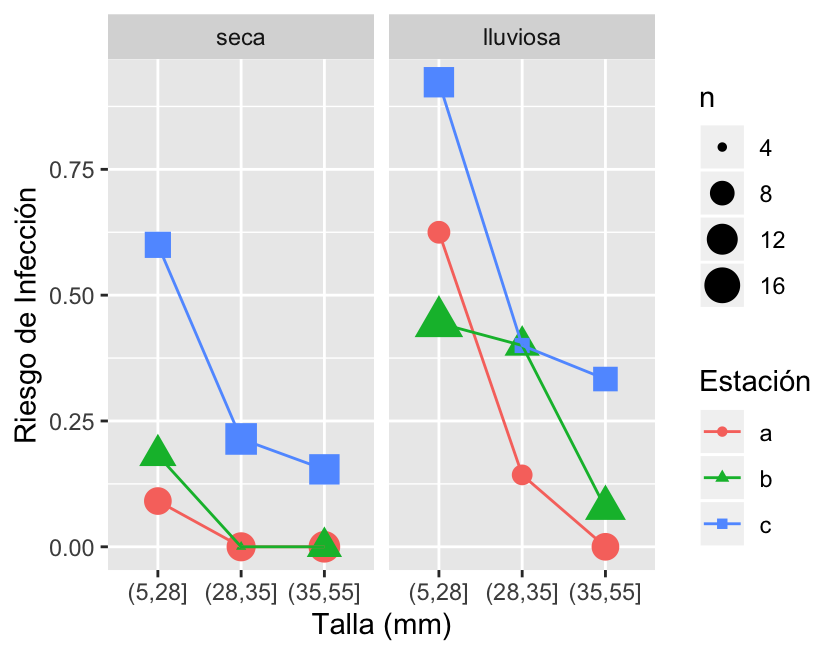
De nuevo se observa que el riesgo de infección es más alto en tallas pequeñas, en la época lluviosa y aumenta hacia la estación c.
Para evaluar independencia entre dos (o más) variables categóricas, por ejemplo bacteria y estacion, se puede ejecutar el comando chisq.test el cual cálcula una prueba chi-cuadrado (\(\chi^2\)):
# Primero se realiza tabla de frecuencias de dos vias:
tabs <- xtabs(~ est + bacteria, data = truchasf)
# Se ejecuta la prueba chi2 sobre la tabla tabs:
chisq.test(tabs, correct = F)
Pearson's Chi-squared test
data: tabs
X-squared = 18.148, df = 2, p-value = 0.0001146El comando prop.test permite comparar dos o más riesgos. La tabla tabs creada atras nos sirve para ejecutar el comando:
# Comando prop.test:
prop.test(x = tabs[, 2], n = rowSums(tabs), correct = F)
3-sample test for equality of proportions without continuity
correction
data: tabs[, 2] out of rowSums(tabs)
X-squared = 18.148, df = 2, p-value = 0.0001146
alternative hypothesis: two.sided
sample estimates:
prop 1 prop 2 prop 3
0.1111111 0.2272727 0.4375000 Con la expresión tabs[, 2] se extrae toda la 2da. columna de la matriz tabs. La 2da. columna contiene la cantidad de truchas infectadas por estación. El comando rowSums suma las filas de tabs lo cual equivale al número total de individuos colectados en cada estación. El argumento correct se usa para indicar si se quiere (o no) aplicar la corrección de Yate’s por continuidad, Bilder & Loughin (2014) sugieren no aplicar esta correción.
Note que los dos comandos, chisq.test o prop.test, producen el mismo estadístico de prueba y el mismo valor \(p\), sólo que el último realiza la prueba desde la perspectiva de comparar dos (o más) proporciones (o riesgos).
La tabla 3.1 muestra algunos comandos, además de chisq.test o prop.test, que reciben una matriz similar a tabs y realizan análisis equivalentes o calculan estadísticos complementarios (p.e., riesgos relativos, razones de odds, etc.) en el contexto de datos categóricos. Otras librerías (no mencionadas en la tabla 3.1) como Epi, epibasix, epiR y epiStats tienen comandos análogos.
| Librería | Comando | Descripción |
|---|---|---|
| stats |
chisq.test
|
Prueba \(\chi^2\) de independencia |
| stats |
summary
|
Sobre un objeto de clase xtabs, genera una prueba \(\chi^2\) (igual que chisq.test)
|
| stats |
prop.test
|
Prueba \(\chi^2\) para comparar dos o mas riegos |
| stats |
fisher.test
|
Prueba exacta de Fisher |
| stats |
mcnemar.test
|
Prueba de McNemar’s |
| stats |
mantelhaen.test
|
Prueba de Mantel-Haenszel |
| vcd |
assocstats
|
Prueba \(\chi^2\), LRT, Coeficiente \(\phi\), \(V\) de Cramer’s. Incluye manejo de estratos |
| vcd |
loddsratio
|
(Log) Razones de Odds, Pruebas de hipótesis, IC, y manejo de estratos |
| epitools |
riskratio
|
Riesgo relativo, IC y pruebas de hipótesis |
| epitools |
oddsratio
|
Razón de Odds, IC y pruebas de hipótesis |
| gmodels |
CrossTable
|
Tabla de contingencia con pruebas de hipótesis (Fisher, \(\chi^2\), McNemar) con opción de solicitar proporciones por fila o columna |
El comando glm (de modelo lineal generalizado) permite ajustar un modelo de regresión logística. Similar a lm o coxph, el comando glm recibe los argumentos: formula, data y subset. No obstante, aparece también el argumento family en el cual se indica el modelo de distribución para los datos (o los errores). Para la regresión logística se debe específicar family = binomial(link = logit).
El modelo de regresión logística se puede ajustar desde los datos en lista (una fila por individuo) (truchasf) o desde los datos agregados (truchasg, ver atras). Enseguida se ejecuta un modelo de regresión logística (sin incluir interacciones por simplicidad) de tres formas distintas:
# Ajuste de modelo de regresion logistica: Tres formas diferentes
# Forma 1: usando datos en lista
m1 <- glm(bacteria ~ tallaf + est + epoca, data = truchasf,
family = binomial(link = logit))
# Forma 2: usando datos agregados y respuesta = proporcion
m2 <- glm(n_bac/n ~ tallaf + est + epoca, data = truchasg,
family = binomial(link = logit), weights = n)
# Forma 3: usando datos agregados y respuesta = matriz
m3 <- glm(cbind(n_bac, n - n_bac) ~ tallaf + est + epoca, data = truchasg,
family = binomial(link = logit))En el código anterior, la forma 1 usa los datos en lista (una fila por individuo) y la respuesta es la variable bacteria, aquella que contiene la presencia (1) o ausencia (0) de la bacteria en cada individuo. Como información adicional, la variable respuesta también puede ser un factor o una columna lógica.
La forma 2 emplea los datos agregados y usa como respuesta la división n_bac/n, es decir, la proporción entre el número de individuos infectados (n_bac) y el número total (n) de individuos muestreados. Bien se hubiese podido usar aquí la columna p_bac de truchasg, la cual representa el mismo cálculo. Se utiliza además el argumento weights para indicar cual es el peso que se le quiere dar a cada fila de la tabla. En este caso, dicho peso debe ser igual al número total (n) de individuos colectados en cada fila.
La forma 3 utiliza también los datos agregados, pero usa como respuesta una matriz (formada por cbind) de dos columnas: el número de éxitos (número de truchas infectadas = n_bac) y el número de fracasos (número de truchas no infectadas = n - n_bac).
Las tres formas producen las mismas estimaciones para los coeficientes del modelo y los mismos resultdos en pruebas de hipótesis sobre dichos coeficientes. A continuación se usa el comando summary sobre cada uno para verificar esto:
# Comparacion de los coeficientes y pruebas de hipotesis
# entre las tres formas de ejecucion mostradas arriba
summary(m1)$coef %>% round(4) Estimate Std. Error z value Pr(>|z|)
(Intercept) -1.9881 0.5533 -3.5929 0.0003
tallaf(28,35] -1.5383 0.4919 -3.1271 0.0018
tallaf(35,55] -2.7243 0.5745 -4.7421 0.0000
estb 0.3883 0.5624 0.6905 0.4899
estc 2.3076 0.5729 4.0280 0.0001
epocalluviosa 1.7878 0.4544 3.9340 0.0001summary(m2)$coef %>% round(4) Estimate Std. Error z value Pr(>|z|)
(Intercept) -1.9881 0.5534 -3.5927 0.0003
tallaf(28,35] -1.5383 0.4919 -3.1271 0.0018
tallaf(35,55] -2.7243 0.5745 -4.7418 0.0000
estb 0.3883 0.5624 0.6904 0.4899
estc 2.3076 0.5729 4.0278 0.0001
epocalluviosa 1.7878 0.4545 3.9338 0.0001summary(m3)$coef %>% round(4) Estimate Std. Error z value Pr(>|z|)
(Intercept) -1.9881 0.5534 -3.5927 0.0003
tallaf(28,35] -1.5383 0.4919 -3.1271 0.0018
tallaf(35,55] -2.7243 0.5745 -4.7418 0.0000
estb 0.3883 0.5624 0.6904 0.4899
estc 2.3076 0.5729 4.0278 0.0001
epocalluviosa 1.7878 0.4545 3.9338 0.0001A pesar de la igualdad en los resultados del modelo ajustado obtenidos desde datos en lista o datos agregados, es recomendable usar el modo agregado debido a que este permite realizar una mejor evaluación de los residuales del modelo y ejecutar una prueba deviance de bondad de ajuste del modelo.
Una primera prueba de hipótesis de interés es si el modelo explica de forma significativa la variación en la respuesta. Esto se puede realizar comparando el deviance del modelo completo con el deviance del modelo sólo con el intercepto. La diferencia de deviance sigue una distribución \(\chi^2\) con \(v\) grados de libertad donde \(v\) se obtiene tomando la diferencia de los grados de libertad de cada modelo. Esta es una prueba de razón de versomilitud (LRT, de sus siglas en ingles). El comando summary imprime los dos deviance y sus correspondientes grados de libertad pero no realiza la prueba.
# Resumen del modelo
summary(m2)
Call:
glm(formula = n_bac/n ~ tallaf + est + epoca, family = binomial(link = logit),
data = truchasg, weights = n)
Deviance Residuals:
Min 1Q Median 3Q Max
-1.0814 -0.5653 -0.1163 0.1305 1.3969
Coefficients:
Estimate Std. Error z value Pr(>|z|)
(Intercept) -1.9881 0.5534 -3.593 0.000327 ***
tallaf(28,35] -1.5383 0.4919 -3.127 0.001766 **
tallaf(35,55] -2.7243 0.5745 -4.742 2.12e-06 ***
estb 0.3883 0.5624 0.690 0.489913
estc 2.3076 0.5729 4.028 5.63e-05 ***
epocalluviosa 1.7878 0.4545 3.934 8.36e-05 ***
---
Signif. codes: 0 '***' 0.001 '**' 0.01 '*' 0.05 '.' 0.1 ' ' 1
(Dispersion parameter for binomial family taken to be 1)
Null deviance: 77.712 on 17 degrees of freedom
Residual deviance: 8.577 on 12 degrees of freedom
AIC: 51.939
Number of Fisher Scoring iterations: 4En la salida anterior, el Null deviance es deviance del modelo sólo con el intercepto (\(\beta_0\)) y el Residual deviance es el deviance del modelo completo (el que se ajustó). A continuación se extrae cada deviance y se realiza manualmente la prueba LRT:
# Prueba Deviance donde se compara el Deviance de un modelo solo
# con el intercepto contra el modelo completo:
D.null <- m2$null.deviance # Deviance nulo (modelo solo con beta0)
D.full <- m2$deviance # Deviance del modelo completo
v.null <- m2$df.null # grados de libertad del modelo nulo
v.full <- m2$df.residual # grados de libertad del modelo completo
# Se calcula e imprime la prueba en un tibble:
tibble(
estad = D.null - D.full,
v = v.null - v.full,
valor_p = pchisq(q = estad, df = v, lower.tail = F)
) %>% as.data.frame() estad v valor_p
1 69.13491 5 1.551012e-13Dado que el valor \(p < 0.05\), se concluye que el modelo, o alguno de sus términos, explican significativamente la variación en el riesgo de infección. Esta prueba se puede ejecutar ajustando el modelo nulo y usando anova para compararlo con el modelo completo como se muestran en el siguiente código:
# Modelo nulo (solo con el intercepto):
m0 <- glm(n_bac/n ~ 1, data = truchasg,
family = binomial(link = logit), weights = n)
# Prueba de Diferencia de Deviance o LRT: nulo vs. completo
anova(m0, m2, test = 'Chisq')Analysis of Deviance Table
Model 1: n_bac/n ~ 1
Model 2: n_bac/n ~ tallaf + est + epoca
Resid. Df Resid. Dev Df Deviance Pr(>Chi)
1 17 77.712
2 12 8.577 5 69.135 1.551e-13 ***
---
Signif. codes: 0 '***' 0.001 '**' 0.01 '*' 0.05 '.' 0.1 ' ' 1Note que se obtiene el mismo resultado anterior.
El comando anova imprime pruebas donde se comparan Deviance de modelos en forma secuencial (pruebas tipo I) y el comando Anova (paquete: car) imprime prueba una variable ajustando por las demás en el modelo (pruebas tipo II):
# Pruebas tipo 1 o secuenciales
anova(m2, test = 'Chisq')Analysis of Deviance Table
Model: binomial, link: logit
Response: n_bac/n
Terms added sequentially (first to last)
Df Deviance Resid. Df Resid. Dev Pr(>Chi)
NULL 17 77.712
tallaf 2 30.658 15 47.054 2.202e-07 ***
est 2 20.430 13 26.624 3.662e-05 ***
epoca 1 18.047 12 8.577 2.155e-05 ***
---
Signif. codes: 0 '***' 0.001 '**' 0.01 '*' 0.05 '.' 0.1 ' ' 1# Pruebas tipo 2 o parciales (del paquete 'car')
Anova(m2)Analysis of Deviance Table (Type II tests)
Response: n_bac/n
LR Chisq Df Pr(>Chisq)
tallaf 32.107 2 1.066e-07 ***
est 24.588 2 4.580e-06 ***
epoca 18.047 1 2.155e-05 ***
---
Signif. codes: 0 '***' 0.001 '**' 0.01 '*' 0.05 '.' 0.1 ' ' 1Como vimos arriba, el comando summary imprime también los coeficientes del modelo y pruebas tipo Wald para cada coeficiente. La regresión logística tiene como respuesta el logit de la infección, el cuál representa el log del odds de la infección. En este sentido, los coeficientes del modelo (impresos por el comando summary) están en escala logit. El comando ci.lin (paquete: Epi) imprime la misma tabla de coeficientes en escala logit, pero adicionalmente permite exponenciar los coeficientes para obtener odds y oddsratio:
# Se imprimen coeficientes e IC95 para coeficientes en escala
# original y tomando su exponencial.
library(Epi)
ci.lin( m2 , Exp = T) %>% round(4) Estimate StdErr z P exp(Est.) 2.5% 97.5%
(Intercept) -1.9881 0.5534 -3.5927 0.0003 0.1370 0.0463 0.4051
tallaf(28,35] -1.5383 0.4919 -3.1271 0.0018 0.2147 0.0819 0.5632
tallaf(35,55] -2.7243 0.5745 -4.7418 0.0000 0.0656 0.0213 0.2023
estb 0.3883 0.5624 0.6904 0.4899 1.4745 0.4897 4.4394
estc 2.3076 0.5729 4.0278 0.0001 10.0502 3.2697 30.8918
epocalluviosa 1.7878 0.4545 3.9338 0.0001 5.9761 2.4523 14.5632La columna títulada exp(Est.) muestra el odds (para el intercepto) y el oddsratio (para los otros términos) y las columnas títuladas 2.5% y 97.5% indican IC95% para los coeficientes.
El comando ggcoef (paquete: GGally) también permite visualizar los coeficientes en la escala orignal o exponencial:
library(gridExtra) # para usar comando grid.arrange
# Grafico de coeficientes en la escala original y tomando
# exponencial
grid.arrange(
ggcoef(m2, exponentiate = F) + xlab('logit estimate '),
ggcoef(m2, exponentiate = T) + xlab('exp(logit) estimate = odds y or'),
ncol = 2
)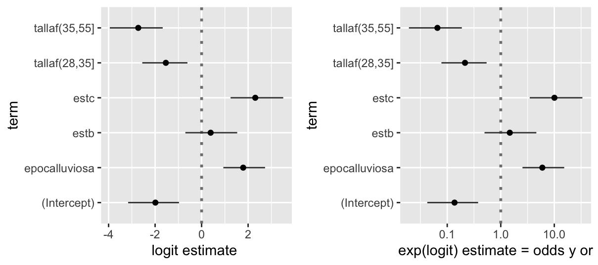
# el comanod grid.arrange (libreria: gridExtra) permite ubicar dos o mas
# graficos ggplot2 en una misma ventana graficaUn diagnóstico del ajuste del modelo y la revisión de los supuestos del mismo se realiza, en parte, usando los residuales. De acuerdo a autores como Bilder & Loughin (2014) o Woodward (2014), es mejor evaluar los residuales obtenidos de un modelo ajustado desde datos agregados. Incluso entre más grande sea el \(n\) en cada fila y la proporción (observada) de éxitos en cada fila no este cerca a \(0\) ó a \(1\), es mejor (Bilder & Loughin, 2014).
Para el caso del ejemplo de las truchas, la tabla con los datos agregados (truchasg) tiene algunas filas con n bajos y algunas filas con p_bac en \(0\). Esto podría sugerir ajustar un modelo desde una tabla con un agrupamiento mayor, quizas usar dos categorías (en lugar de tres) para la talla podría mejorar esta condición. Por ahora trabajaremos con el modelo guardado en el objeto m2.
El comando plot sobre un objeto glm imprime hasta seis gráficos de diagnóstico que involucran a los residuales. A continuación se muestran tres de ellos:
# Se configura o prepara la ventana grafica para ubicar tres figuras en
# una fila y tres columnas. Ademas se modifican las margenes y el tamano
# del texto en el grafico en general:
par(mfrow = c(1,3), mar = c(3.5, 3.5, 2, 1), mgp = c(2,1,0), cex = 0.9)
plot(m2, which = 1) # residuales vs. fitted (predictor lineal)
plot(m2, which = 2) # Cuantil-cuantil de residuales deviance estandarizados
plot(m2, which = 4) # Distancia de Cook (filas influenciales)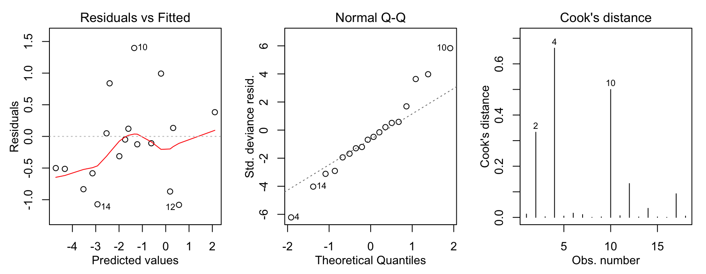
Bilder & Loughin (2014) (sección 5.2.1, ejemplo de pág. 290) discuten en detalle el uso de los residuales en modelos glm para evaluación del ajuste del modelo. Ellos recomiendan el uso de los residuales de Pearson estándarizados. Enseguida se indica como se pueden extraer desde el objeto m2 y la construcción de algunas gráficos relevantes.
# Se crea tabla con valores ajustados, predictor lineal y
# y dos tipos de residuales:
truchasg.m2 <- mutate(truchasg,
pi.hat = predict(m2, type = 'response'), # prop ajustada (igual que mg1$fit)
pred.lin = m2$linear.predictors, # predictor lineal (logit)
res.est = rstandard(m2, type = 'pearson') # residuales estandarizados de Pearson
)
truchasg.m2 # explore la tabla generada# A tibble: 18 x 9
tallaf est epoca n n_bac p_bac pi.hat pred.lin res.est
<fct> <fct> <fct> <int> <int> <dbl> <dbl> <dbl> <dbl>
1 (5,28] a seca 11 1 0.0909 0.120 -1.99 -0.375
2 (5,28] a lluviosa 8 5 0.625 0.450 -0.200 1.41
3 (5,28] b seca 11 2 0.182 0.168 -1.60 0.156
4 (5,28] b lluviosa 18 8 0.444 0.547 0.188 -1.47
5 (5,28] c seca 10 6 0.6 0.579 0.319 0.184
6 (5,28] c lluviosa 13 12 0.923 0.892 2.11 0.447
7 (28,35] a seca 12 0 0 0.0286 -3.53 -0.641
8 (28,35] a lluviosa 7 1 0.143 0.149 -1.74 -0.0590
9 (28,35] b seca 4 0 0 0.0416 -3.14 -0.430
10 (28,35] b lluviosa 10 4 0.4 0.206 -1.35 2.01
11 (28,35] c seca 14 3 0.214 0.228 -1.22 -0.183
12 (28,35] c lluviosa 5 2 0.4 0.639 0.569 -1.33
13 (35,55] a seca 14 0 0 0.00890 -4.71 -0.368
14 (35,55] a lluviosa 11 0 0 0.0510 -2.92 -0.870
15 (35,55] b seca 10 0 0 0.0131 -4.32 -0.378
16 (35,55] b lluviosa 13 1 0.0769 0.0734 -2.54 0.0589
17 (35,55] c seca 13 2 0.154 0.0828 -2.40 1.12
18 (35,55] c lluviosa 9 3 0.333 0.350 -0.617 -0.160 Ahora se ejecutan algunos gráficos relevantes sugeridos por Bilder & Loughin (2014) usando ggplot2:
# pi.hat vs. res.est
p1 <- ggplot(truchasg.m2, aes(x = pi.hat, y = res.est)) +
geom_point(size = 3, pch = 21, fill = 'blue') + geom_smooth() +
geom_hline(yintercept = c(-3,0,3), lty = 2, lwd = 0.5) +
ylim(-3.5, 3.5)
# est vs. res.est
p2 <- ggplot(truchasg.m2, aes(x = est, y = res.est)) +
geom_jitter(width = 0.1, size = 3, pch = 21, fill = 'blue') +
geom_hline(yintercept = c(-3,0,3), lty = 2, lwd = 0.5) +
ylim(-3.5, 3.5)
# pred.lin vs. res.est
p3 <- ggplot(truchasg.m2, aes(x = pred.lin, y = res.est)) +
geom_point(size = 3, pch = 21, fill = 'blue') + geom_smooth() +
geom_hline(yintercept = c(-3,0,3), lty = 2, lwd = 0.5) +
ylim(-3.5, 3.5)
# Se grafican los tres juntos en un arreglo de tres columnas
# y una fila:
grid.arrange(p1, p2, p3, ncol = 3)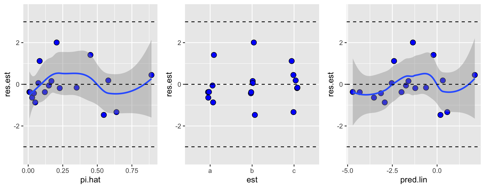
En los tres gráficos se busca que no existan patrones marcados (p.e., parabolas, o que tiendan a incrementar su varianza) en los residuales y que no aparezcan residuales extremos mayores que 3 (se espera que estos residuales siga una distribución aproximadamente normal).
El deviance de un modelo representa la comparación de la verosimilitud del modelo evaluado con la verosimilitud de uno llamado el modelo saturado el cual implica un ajuste perfecto a los datos (el modelo saturado tiene un parámetro para cada fila de la tabla de datos).
Así el deviance de un modelo se puede usar para evaluar si un modelo más simple (como el evaluado) que el saturado aún permite explicar la respuesta, luego se busca no rechazar H\(_0\) (igualdad en las verosimilitudes).
# Prueba Deviance para evaluar la bondad de ajuste del modelo
# Debe aplicarse solo para modelos ajustados desde datos agregados
# con un n razonablemente grande en cada fila
tibble(
D = m2$deviance, # Deviance = D(Modelo evaluado) - D(Modelo saturado)
v = m2$df.residual , # grados de libertad
valor_p = pchisq(q = D, df = v, lower.tail = F) # valor p
) %>% as.data.frame() D v valor_p
1 8.577 12 0.7385723La prueba Deviance de bondad de ajuste sólo debe realizarse desde modelos ajustados con datos agregados (Bilder & Loughin, 2014; Woodward, 2014). Dado que el valor \(p = 0.739 > 0.05\) es grande, se retiene la hipótesis nula de iguadad y se concluye que el modelo propuesto tiene un ajuste razonable a los datos.
La prueba de Hosmer-Lemeshow es otra prueba de bondad de ajuste disponible para modelos ejecutados desde datos en lista (una fila por individuo) (Woodward, 2014). La librería generalhoslem (Jay, 2018) incluye el comando logitgof que realiza esta prueba.
# Prueba Hosmer-Lemeshow sobre el objeto m1 (desde datos en lista)
library(generalhoslem) # se activa libreria
logitgof(obs = truchasf$bacteria, # valores observados
exp = m1$fitted.values # valores esperados o predichos
)
Hosmer and Lemeshow test (binary model)
data: truchasf$bacteria, m1$fitted.values
X-squared = 4.4613, df = 8, p-value = 0.8133Dado que el valor \(p = 0.813 > 0.05\) es grande, se retiene la hipótesis nula y se concluye que el modelo tiene un ajuste razonable a los datos.
La sobredispersión es cuando el modelo ajustado muestra una mayor variación que la esperada bajo una distribución binomial. Una forma de revisar esta condición es comparando el deviance del modelo con sus grados de libertad. Si el deviance del modelo es mucho más grande que sus grados de libertad, puede existir sobredispersión. Igualmente, una gran cantidad de residuales estandarizados de Pearson inusualmente grandes es indicio de sobredispersión (Bilder & Loughin, 2014; Woodward, 2014).
De cálculos anteriores, observe que el deviance del modelo m2 es m2$deviance = 8.577, el cual es menor que sus grados de libertad m2$df.residual = 12, luego no parece ocurrir sobredispersión en este ejemplo. Además, los gráficos de residuales realizados arriba tampoco muestran un exceso de resiudales extremos, de hecho no aparece ninguno. Para detalles respecto a la sobredispersión revisar Bilder & Loughin (2014).
El poder clasificatorio del modelo para discriminar éxitos (individuo infectado) y fracasos (individuo sano) se puede evaluar con la curva ROC. El comando ROC (paquete: Epi) construye una curva ROC para un modelo de regresión logística (ajustado desde datos en lista) y calcula el área bajo la curva (AUC) entre otros parámetros:
library(Epi)
# Se hace curva ROC y se calcula el AUC = area bajo la curva
par(mar = c(4,4,1,1), mgp = c(2,1,0)) # se cambian las margenes de la figura
ROC(form = formula(m1), plot = 'ROC', data = truchasf)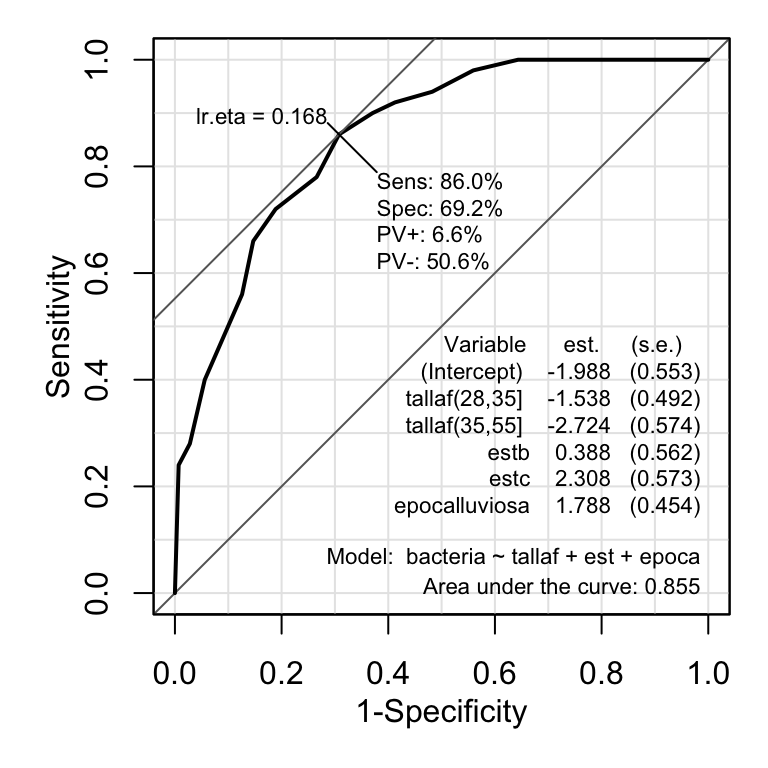
En el código anterior, el comando formula extrae la fórmula del objeto m1 creado atras. Aquí debe usarse el modelo ajustado desde los datos en lista (una fila por individuo). Observe que la curva ROC se ubica muy por encima de la diagonal y el AUC = 0.855 > 0.5, indicando que el modelo realiza una clasificación (de éxitos y fracasos) mejor que la que se produciría por azar. La librería pROC (Robin et al., 2011) esta especializada en calcular curvas ROC.
Bilder, C. R., & Loughin, T. M. (2014). Analysis of categorical data with R. Chapman; Hall/CRC.
Broström, G. (2012). Event history analysis with R. CRC Press.
Chang, W. (2012). R graphics cookbook: Practical recipes for visualizing data. " O’Reilly Media, Inc.".
Fox, J., & Weisberg, S. (2011). An R companion to applied regression (Second). Thousand Oaks CA: Sage. Retrieved from http://socserv.socsci.mcmaster.ca/jfox/Books/Companion
Jay, M. (2018). Generalhoslem: Goodness of fit tests for logistic regression models. Retrieved from https://CRAN.R-project.org/package=generalhoslem
Le, C. T., & Eberly, L. E. (2016). Introductory biostatistics (2nd ed.). Wiley-Interscience.
Lenth, R. (2019). Emmeans: Estimated marginal means, aka least-squares means. Retrieved from https://CRAN.R-project.org/package=emmeans
Meyer, D., Zeileis, A., & Hornik, K. (2017). Vcd: Visualizing categorical data.
R Core Team. (2019). R: A language and environment for statistical computing. Vienna, Austria: R Foundation for Statistical Computing. Retrieved from https://www.R-project.org/
Robin, X., Turck, N., Hainard, A., Tiberti, N., Lisacek, F., Sanchez, J.-C., et al. (2011). PROC: An open-source package for r and s+ to analyze and compare roc curves. BMC Bioinformatics, 12, 77.
Tableman, M., & Kim, J. S. (2003). Survival analysis using S: Analysis of time-to-event data. Chapman; Hall/CRC.
Wickham, H. (2016). Ggplot2: Elegant graphics for data analysis. Springer-Verlag New York. Retrieved from http://ggplot2.org
Wickham, H. (2017). Tidyverse: Easily install and load the ’tidyverse’. Retrieved from https://CRAN.R-project.org/package=tidyverse
Wickham, H., & Grolemund, G. (2017). R for data science: Import, tidy, transform, visualize, and model data. " O’Reilly Media, Inc.".
Woodward, M. (2014). Epidemiology: Study design and data analysis (2nd ed.). Boca Raton, Florida: CRC Press.